6. BÖLÜM
BEDEN DİLİ
Şu ana kadar, benim çalıştığım alanla ilgili gördüğünüz tüm kitapların başlığı muhtemelen Beden Dili ya da benzer kavramları içermekteydi. Üstelik aynı kavram yurtdışında da Body Language adı altında kullanılmaktadır. Beden dili bu konuda son derece popüler olmuş bir tanımlamadır ve genel kabul görmektedir. Aslında, sadece kendi tanımı içerisindeki bir kavrama işaret ediyorsa, yanlış da değil, hatta uygun bir tanımdır. Ancak bu konu, iletişim bilimlerinde Sözsüz İletişim olarak bilinir ve bir iletişim dili olarak kabul edilir. Sosyal psikolojide ise genellikle Sözsüz Davranış tanımı rağbet görür. Buna göre sözsüz iletişim, konuşma dışında kalan tüm iletişim biçimlerine karşılık gelir.156 Bu tanımı dar anlamıyla ele aldığımızda, kavramın içerisinde, yüz ifadeleri, el ve kol jestleri, duruşlar, pozisyonlar ile ayak/bacakların çeşitli hareketleri yer bulur.157 Ancak tanımı bu kadar dar açıdan ele alamayız, sözsüz iletişim, bu hareketlerle sınırlı kalamaz. Çünkü bu alana beden dili (kinesics), yakınlık ve alan kullanımı (proxemics), dokunma (haptic), çevresel faktörler (mimari stil, koku, renk, ısı, aydınlatma, gürültü ve önceki hareketin izleri), fiziksel özellikler (genel çekicilik, vücut ya da nefes kokusu, uzunluk, ağırlık ve saç/ten rengi), dil ötesi (konuşma harici ses işaretleri, ses yüksekliği, konuşma ritmi, yoğunluğu, sessiz duraklamalar, konuşmaya karışan sesler, konuşma bozuklukları), yapay öğeler (parfüm, elbise, ruj, gözlük, dövme) gibi kavramların tamamı girer.158
Fakat sözsüz iletişim kavramının konuşma dışı şeklinde tanımlanmasında, kendi içerisinde de çelişkiler söz konusudur. Örneğin dilsiz alfabesi hareketlerden oluşur, bir konuşma gerçekleşmez ama her hareket bir simgeyi ifade eder. Buna sözsüz iletişim demek o halde mümkün müdür? Konuşma kusurları, yani kekeleme, kelime tekrarlama, boşluk dolduran sesler ekleme de sözsüz iletişimin konuları arasındadır. Burada da bir çelişki kendisini gösterir. Sonuçta aslında sözlü ve sözsüz iletişimi birbirinden tamamen ayırabilmek teoride pek mümkün görünmemektedir.159 Böyle bir tanıma o halde neden ihtiyaç duyulmaktadır?
Beden dili olarak tanımladığımız kavram, aslında yalnızca sözsüz iletişimin kinesics denilen vücut hareketlerini, bakış ve duruşları kapsamaktadır. Oysa biraz önce de belirttiğim gibi, konunun açılımları oldukça geniştir. Kaldı ki, piyasada bulunan kitaplarda da, beden dilinin yanında, sözsüz iletişimin diğer unsurları olan çevre iletişimi, renk bilgisi, ses tonu ve dil ötesi (paralanguage), fiziksel özellikler, dokunma gibi konular da aktarılmaya çalışılmaktadır. Ancak, beden dili yerleşik, aynı zamanda ticari bir ifadedir. O kadar ki, kitapların isimlerini dahi etkilemektedir. Örneğin benim de kaynak kitap olarak kullandığım eserlerden olan Charles Darwin’in İnsan ve Hayvanlarda Duyguların İfadesi160 isimli kitabının elimdeki baskısında, iç kapak aynı ismi taşımakla beraber, kötü bir satış taktiği olarak, satışı canlandırmak amacıyla, dış kapak ve sırtı İnsan ve Hayvanlarda Beden Dili olarak basılmıştır. 161Bu nedenle, beden dili ifadesinin eğitim veren kişiler tarafından genel anlamda kullanılmasına karşı olmamakla beraber; işin bilimsel yönüyle ilgilenen bizlerin, bilim çevrelerinde genel kabul görmüş olan sözsüz iletişim ya da sözsüz davranış bilgisi kavramlarıyla birlikte, onun tamamlayıcısı olan sözsüz işaretler kavramlarını kullanmamız gerektiğine inanıyorum.
Sözsüz iletişim, bizim daha doğarken beraberimizde getirdiğimiz, bir kısmı kalıtım yoluyla aktarılan, bir kısmı ise ailemizden ve çevremizden etkileşim yoluyla öğrendiğimiz bir iletişim biçimidir. Genel itibariyle bu konuda herhangi bir eğitim alınmaz. Ancak kişinin kendi ilgisi ve eline geçen fırsatları değerlendirmesi sayesinde, birtakım kaynakları okuyarak ve bazı eğitim çalışmalarına katılarak, bu konuda eğitim alabilir. Üniversitelerde, kısıtlı sayıdaki bölümde, akademisyenlerden bu konuda ders alınabilir.162Hepsi bu kadardır. Ancak sözlü iletişim için ilköğretim çağından itibaren ciddi bir eğitim alınır. Dilin bütün kuralları öğrenilir. Daha sonra, kendi dili dışında, başka yabancı diller de çocuklara öğretilir. Ben bunun hatalı bir uygulama olduğunu düşünüyorum. Çocukların ileride coşkulu ve verimli bir şekilde iletişim kurabilmeleri, bu alanda becerilerini arttırabilmeleri için okullarda en azından seçmeli ders olarak genel iletişim ve sözsüz iletişim dersleri verilmesi gerektiğini düşünüyorum.
Sözlü iletişime ait sayısız sözlük bulunmaktadır. Bunlar sayesinde insanlar sözlü iletişimin sembolleri olan kelimelerin anlamlarına kolayca ulaşabilmekte ve kelimeyi öğrenebilmektedirler. Ancak, sözsüz iletişime ilişkin, her ne kadar bu konuda yapılan bazı çalışmalar olsa da, halen böylesine net anlamlara sahip sözlükler bulunmamaktadır. Bunun nedeni, sözlü iletişime ilişkin sözlük çalışmalarının dilbilimciler tarafından uzun yıllardır yürütülmesi, ancak sözsüz iletişim sözlüklerine ilişkin çalışmaların geçmişinin çok yakın bir zaman dilimine dayanmasıdır.163
Beden dili, ya da bilimsel bir deyişle kinesics, esas olarak duygu ve düşüncelerin beden hareketlerine yansımasıdır.164 Bir başka deyişle, beden dili insanın ilk anlaşma aracı ve ilk lisanı olmuştur.
Beden dili, bir başka tanıma göre, bir başkasına duygusal, tutumsal ya da bilgi içeren bir mesajı iletmeye yarayan, istem dışı ya da istemli olarak ortaya çıkan, hareket ya da duruştur.165 Bu tanımdan hareketle, kavramın içeriği derinlemesine sorgulanabilir. Beden hareketleri (sallanma, göz kırpma vb.) ve duruşlar (sırtı kamburlaştırmak veya arkaya yaslanmak vb.) beden dilinin temel kategorileridir. Her hareket ya da duruş, mesaj iletme kapasitesine sahipken, bu hareketlerin her zaman mesaj içerikli olması gerekmez. Örneğin, kaşlarını çatmış kişinin her zaman öfkeli olması beklenmez, görmeyle ilgili bir sorundan dolayı da kaşlarını çatıyor olabilir. Burada bir tuzağa da düşmemek gerekir. Sözsüz iletişimle ilgili bir miktar araştırma yapan ya da eğitim alan çoğu kişide, bu sinyalleri okumak bir hastalık halini almaktadır. İnsanların her hareketinden bir mana çıkarmaya çalışmaktadır ki, bu her zaman geçerli olabilecek bir durum değildir. Üstelik çıkardığı sonuçları her seferinde karşısındakiyle paylaşmak, yani “Sen beni dinlemiyorsun, bak kollarını kavuşturmuşsun!” gibi karşısındakini yargılamak ukalaca bir yaklaşımdır ve iletişimde çok ciddi engeller yaratabilir. Bu nedenle, bedenin her duruşunun mutlaka bir anlamı olması gerektiği düşüncesinden sıyrılmak ve karşımızdakinin beynini okumaya çalışmaktan vazgeçmek, yine iletişimi güçlendirecek bir davranış biçimidir.
Konunun felsefesine girmişken, bir düşüncemi daha paylaşmak isterim. Sözsüz iletişimle ilgilenenlerde genellikle hatalı bir yaklaşım söz konusu oluyor. Tabii bu algının oluşmasında, Beden Dili kitaplarının ya da eğitimlerinin de bir hayli etkisi olduğunu değerlendiriyorum. Sözsüz iletişim, iletişim kurduğumuz kişileri istediğimiz gibi yönlendirme, ezme, üstünlük kurma için öğrenilen bir beceri değildir. Aksine en başta sözsüz iletişim, kendimizi izleyerek, iletişim esnasında yaptığımız iletişim hatalarının farkına varıp, daha engelsiz ve doğal bir iletişim kurmanın yol haritasıdır. İnsanlar, iletişim becerisiyle doğar. Bizi hayvanlardan ayıran en önemli özelliklerden bir tanesi düşünmek ise; bir tanesi de iletişim kurma becerimizdir. Bu nedenle çocuklarımıza vereceğimiz ve ilerleyen yaşlarda sosyal yeteneklerini artıracak temel esaslardan birisi, engelsiz iletişim yeteneğidir.
Beden dili hareketleri, refleksif (istem dışı) ya da refleksif olmayan (istemli) olabilir. Örnek olarak, ileriki bölümlerde söz edilecek olan gözbebeklerinin kendiliğinden büyüyüp küçülmesi verilebilir. Araştırmalar belli durumlarda, gözbebeklerinin bir beden dili sinyali olarak irileştiğini, bazı durumlarda ise küçüldüğünü göstermiştir. Bunun gibi yüz seğirmesi, göz hareketleri, omzun yönelmesi istem dışı hareketler arasında sayılabilir.
Bir diğer grup ise, kasıtlı olarak yapılan hareketlerdir. Bunların üzerinde güçlü bir kontrolümüz olduğundan, bu hareketlerin anlamını çözebilmek daha güçtür.166Kişi birisi hakkında olumsuz düşündüğü halde yüzüne gülümseyerek bunu saklamak istiyor olabilir. O anda korku içerisinde bulunan bir kişi ellerini beline koyup akimbo duruşu167 göstererek korkusunu saklamak istiyor olabilir. Birileri yüzümüze gülüp, arkamızdan kuyumuzu kazabilir. Yalvarma duruşu ve hareketleri sergileyen dilenci, akşam mesai bitiminde arabasına binip gece kulübünün yolunu tutabilir (ki basında sık sık böyle haberlere rastlıyoruz).
Beden dili, kişinin duygusal durumunun dışa vurmuş halidir.168 Her jest ya da hareket kişinin o anda hissettiği duyguyu anlamak için değerli bir anahtar olabilir. Örneğin kilo aldığından endişe eden bir adam farkında olmadan çenesinin altını çekiştirebilir; göbeğinden rahatsız olan kadın ellerini sık sık göbeği üzerinde gezdirerek bastırabilir; kendisini endişeli ya da savunma durumunda hisseden biri kollarını kavuşturabilir, bacaklarını çapraz duruma getirebilir ya da her ikisini birden gerçekleştirebilir.
Beden dili, yapılan birkaç araştırmada beden hareketleri, duruş, yüz ifadeleri ve göz davranışı olarak tanımlanmıştır.169 “Kinesics” Yunancada hareket anlamına gelen kelimeden türetilmiştir. “Jest” ve “mimik”ten daha kapsamlıdır. Kinesik, bedensel davranışlarla yapılan iletişimin incelenmesidir.170
Beden dilinin avantajları aşağıdaki şekilde özetlenebilir:171
Dezavantajları ise:
İpucu: Beden dili kitabı okuyanlarda, kısa da olsa eğitim alanlarda ve bunun çok etkisinde kalanlarda tuhaf davranışlar gözlenir. Bir defa adamın gözleri fıldır fırdır hareketlerinizi gözetler ki, bu oldukça rahatsız edici bir tarzdır. Abartılı jestler yapar, elinizi doğal olmayan bir biçimde sıkmaya çalışır. Gereksiz yerlerinize dokunup iletişim kurmaya çalışır. Bunlar oldukça rahatsız yaklaşımlardır ve bu kitap, bu hareketlerden sizi uzak tutabilmek adına yazılmıştır.
Bu bölümün detaylı ele almamın bir nedeni var. Ben, konuya ilişkin tez çalışmasını yürütürken, alanda yazılmış birçok kitap olmasına rağmen, bunların bilimsel referanslardan uzak olduğunu tespit ettim. Bu bölümün detaylı olması, ileride bu alanda çalışma yapmak isteyen insanların gerekli kaynak referanslarına ulaşabilmesi ve terminoloji eksikliğinin giderilmesine bir parça katkı sağlayabilmek amacını taşımaktadır. Umarım çok sıkıcı olmaz. Ben, beden dilini üç başlık altında aktarmak istiyorum:
Jestler (Gestures)
Jest, beden veya bölümleri tarafından yapılan hareketlere verilen genel bir isimdir.173Jest kelimesi (gesture) “hareket, taşıma duruş” anlamlarına gelen Latince gestus kelimesinden türemiştir ve vücudu taşıma davranışı anlamına gelir.174Genellikle el ve kol hareketleri olarak bilinse de baş hareketleri de bu gruba dahil edilmelidir.
Jestlerle ilgili bir değerlendirme de Cüceloğlu’ndan gelmiştir. Jestlerin, eş deyişle el ve kol hareketlerinin, duyguların en güzel belirtileri olduğunu kaydeder. Verdiği örnek de oldukça betimleyicidir:
“Karşımızda konuşan kişinin elindeki kâğıdı sürekli büküp katladığını, parmaklarıyla masaya sürekli vurduğunu ve gözlerini bakışlarımızdan hep kaçırdığını görürsek, bu kişinin bizimle olmaktan rahatsız olduğunu düşünürüz. Bu tür davranışlar, karşımızdaki ne derse desin, onun gerçek heyecanlarını açığa vurmaktadır.”175
Jestler, esas ve ikincil olmak üzere iki gruba ayrılır.176Esas ya da birincil jestlerden kastedilen bireylerin duygu ve düşüncelerini destekleyen somut hareketlerdir. İkincil jestler ise bedenin uyumunu sağlamaya yönelik, kendiliğinden oluşan, rahatlama, yatıştırma benzeri hareketlerdir.
Jestler konusunu aşağıdaki başlıklar altında vermeye çalışacağım:177
Semboller (Emblems)
Çift yönlü dar bir yolda ilerliyorsunuz. Aceleniz var ve zamanınız kısıtlı. Birden önünüzde seyreden bir kamyona denk geliyorsunuz. Kamyon yolu ortalamış ve böyle sollama şansınız yok. Halbuki sağa yanaşsa, rahatça geçeceksiniz. Önce kibarca arkasından selektör yaparak uyarıyorsunuz, bir faydası olmuyor. Sonra birkaç kez arka arkaya yapıyorsunuz, yine oralı olmuyor. Sonunda sinirleniyorsunuz ve korna çalarak ve selektör yaparak ikaz ediyorsunuz adamı. Derken kamyonun camından şoförün eli uzanıyor. Eli yumruk halindeyken ortaparmağını havaya dikiyor. Konuşmasına hiç gerek yok. Ne dediğini anlayabildiniz mi? Tekrarlamasına gerek yok herhalde. Bu hareketi karşılayan tam bir kelime ya da cümle var mı? Anlamını karıştırma şansınız var mı, başka bir anlama gelir mi?
Jestlerden birincisine emblem (sembol) adı verilmektedir. Semboller, diğer sözsüz davranışlardan kullanım, sözlü ifadeyle ilgisi, farkındalık ve kasıt bakımından farklılık gösterir. Semboller, doğrudan sözlü bir karşılığı ya da sözlükte bir tanımlaması olan, bir ya da birkaç kelimeyi içeren sözsüz hareketlerdir. Bu işaretlerin anlamı bakımından bir kültürün ya da bir alt kültürün fikir birliği vardır.178
Bu işaretler, anlamı için konuşmaya en az dayanan jestlerdir ve genellikle tek bir jestle icra edilir. O tek hareketle ne demek istediğini derhal anlarsınız. Trafik polisi, kontrol noktasına doğru yaklaşan kamyon şoförüne doğru, elini kaldırarak avucunun içini gösterdi. Hadi siz de yapın. Anlamaması mümkün mü? Kamyon şoförü durdu değil mi?
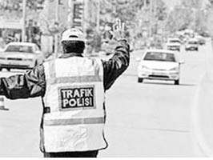
Trafik polisinin “Dur!” işareti.
Her kültürün kendine ait birtakım sembol hareketleri vardır. O kültürün insanları arasında ortak bir dil gibidir. Birinin karşısındakine, elini yukarı kaldırıp, sağa sola çevirmesinin, karşısındakine “Sen delirdin mi?” anlamına geldiğini toplumumuzda herkes bilir. Karşısındakine yumruğunu uzatıp işaretparmağı ile ortaparmağı arasından başparmağını geçirip sallaması (argo tabirle “Nah!” hareketi), ağır hakaret anlamına gelir. Ancak aynı hareket, bir alt grup olan kahvehanede okey oynayanlar arasında esprili bir dille “Ara taşını bekliyorum!” anlamına da gelebilir. Semboller için önemli olan, bireyin içerisinde bulunduğu kültürün ya da alt kültürün üzerinde uzlaştığı belli bir kelime ya da cümlecik anlamı olan bir hareket olmasıdır.
İnsanlar neredeyse her zaman sembol kullanımlarının farkındadır, istendiğinde tekrar edebilirler ve bu işaretlerin iletişim sorumluluğunu taşırlar.179 Nasıl ki söylediğiniz sözlerden sorumluysanız, sembolik hareketinizden de o kadar sorumlusunuz. Hocanıza sinirlendiğinizde yapacağınız malum sembolü, “Elimden kaçtı!” diyerek affettiremezsiniz. İnsanlar genellikle sembol kullandıklarının farkındadır, tıpkı kullandıkları kelimenin farkında oldukları gibi.180Bu nedenle bir bakıma semboller diğer kategorilerdeki sözsüz hareketlerden daha az kişisel özellik barındırır. Çünkü insanlar kelimeler gibi, sembolleri de seçerek kullanırlar.
Bir hareketin sembolik olması, gruplar arasında paylaşılan anlamıyla ve kasıtlı kullanımıyla belli olur. Bu hareket, yeni yerleşen bir hareket de olabilir. Önemli olan o kültürün hareketi sahiplenmesi ve sürekli tekrarlamasıdır.
Sembolün bir diğer özelliği, gören kişinin hareketin sadece anlamını bilmekle kalmayıp, aynı zamanda kendisine yapıldığını da bilmesidir.181Ayrıca sembol, anlamı değişmeden bir ya da birkaç kelimeyle değiştirilebilir. Örneğin, Türkiye’de para anlamına gelen başparmak ve işaretparmağının birbirine sürtülmesinde, hareketin yerine para kelimesi doğrudan kullanılsa hareketin anlamı değişmez.
Semboller genellikle gürültü, çevresel etmenler, uzaklık (avcılar arasında), anlaşma (sessiz sinema oyununda) ya da organik şartlardan dolayı (sağırlık) ortaya çıkar.182Örneğin British Colombia’daki kereste doğrama atölyelerinde183 gürültü, konuşmayı çok güçleştirmektedir. Bu nedenle görevle bağlantılı bir işaret sistemi geliştirilmiş ve daha sonra bunlar, görev dışı hareketler de içermeye başlamıştır.184Basketbol oyununda takım koçunun hakemden mola vermesini isteme hareketi olan, sol el avuç içi yatay bir şekilde yere bakarken sağ el parmaklarının dik bir şekilde sol elle birleşme hareketi, günlük hayatta da yerleşmiştir. Özellikle bir tartışma esnasında, karşısındakinin sürekli konuştuğunu ve konuşmasına bir ara vermesini ima etmek isteyen kişiler de bu hareketi yapar. Daha çok, gençler arasında görülen bir harekettir.
Benzer şekilde savaş ortamı da oldukça gürültülüdür ve sözlü komutlara fiziken olanak olmayabilir ya da gece harekâtında sessiz olmak gerekebilir. Bu nedenle İşaretle Sevk ve İdare isimli bir Silahlı Kuvvetler talimnamesi vardır. Burada, muharebe ya da eğitim alanında gerekli olabilecek birçok komutun sembolü mevcuttur ve hareketin özelliğine göre ellerle, eldeki tüfekle ya da bedenle icra edilen bir dizi sembolden oluşur. Bu semboller sayesinde, komutan ve birliğin personeli kendi arasında konuşmadan işaretleşebilir. Birliğe yeni katılan tüm personele bunun eğitimi verilir ve herkesin bu ortak sembol diline hâkim olması sağlanır.
İzcilikte de bir işaret dili mevcuttur:
“Zaman zaman kişilerin dikkatini toplamakta, onları sevk ve idare etmekte zorlanırız. Özellikle bizi yeterince tanımayan bir toplum içinde isek bu iş daha da zordur. Toplum içinde, “dur, koş, sus” gibi komut veya bağırmalar hoş karşılanmayabilir. Bu ortamlarda ve ses seviyesinin dışında olanlara ulaşmak için kol komutlarını kullanırız. Her kol komutunun kendine özgü bir anlamı olup, ikinci bir müdahaleye gerek kalmadan izciler tarafından net bir şekilde anlaşılır.
Dikkat: Sağ kol havada, parmaklar bitişik durumdadır.
Anlamı: Sus, izle, bundan sonra gelecek komutu bekle.”185
Eğer bir işaret, tam anlamıyla bir sembol ise anlamı belirsiz olamaz. Örneğin resimdeki gibi Amerikan “Tamam!” işareti yapıldığında bunun muhatabı olan Amerikalı bu hareketin anlamını son derece iyi bilir. Amerikan filmleri aracılığıyla hareket tüm dünyada da yayılmıştır.
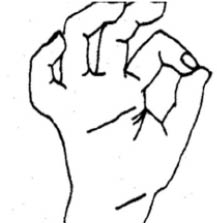
Tamam hareketi.
Baş sallayarak evet ya da hayır deme hareketi yine semboller arasında sayılabilir. Araştırmacıların, sembol dağarcığını tespit için oluşturdukları standart anket metodu orta sınıf Amerikalılara, şehirli Japonlara, İranlılara, yazı yazmayı bilmeyen Yeni Gine kültürlerine ve ABD’ye okumak için gelmiş ve bir yıldan az süre geçirmiş olan İsrailli öğrencilere uygulanmışlardır. Sonuçlar oldukça şaşırtıcıdır:
Semboller en kolay anlaşılabilen sözsüz davranışlardır. Anlamları üzerinde genel bir anlaşma vardır. Çok sık kullanılırlar, çünkü anlamları çok belirgindir.186Günlük hayatta her dakika kullanımına rastlanır.
Semboller kültürle aktarılır ve öğrenilerek kullanılır.187Ancak, kültürden kültüre çok fazla değişiklik gösterir. Şu ana kadar tüm kültürlerde aynı olan ve aynı anlamı taşıyan hiçbir sembol hareket bulunamamıştır.188Örneğin, Amerikan OK (Her şey tamam!) işareti Ortadoğu’da hakaret anlamına gelmektedir.
Sembol hareketlerin öğrenimi yaşla artmaktadır. Yapılan bir çalışmada,189dört yaşındaki çocukların iki yaşındaki çocuklardan daha fazla sembol bildiği ortaya çıkmıştır.
Tarihte de bununla ilgili bir örnek bulunmaktadır. 1877-1878, yani 93 Harbi’nde Rusya ve Bulgaristan müttefik olarak Osmanlı Devleti’ne karşı savaşmışlardır. Ancak, sembolik bir problem ortaya çıkmıştır. Ruslar “hayır” derken başlarını iki yana doğru sallamaktadırlar. Ancak, çok benzeri bir hareket Bulgar kültüründe “evet” anlamına gelmektedir.190 Bu da harekât esnasında, birtakım problemlere neden olmuştur.
Göstergeler (Illustrators)
Jest kategorilerinden bir diğerine gösterge (illustrator) adı verilir. Gösterge, konuşmanın çok önemli bir parçasıdır ve konuşulan şeyi betimlemeye yarar. Altı ayrı gösterge çeşidi vardır: Batonlar, konuşmaya tempo tutan davranışlardır. Kelimelerin önemini vurgulamak için örneğin, her kelimede masaya vurmak ya da ayakla tempo tutmak bunlar arasında sayılabilir. İdeograflar, konuşulan nesnenin ya da kavramın eskizini elle çizmek gibidir. Diektik hareketler, doğrudan bahsedilen nesneyi ya da kişiyi işaret etmektir.
Alan hareketleri, (Spatial movements) alansal bir ilişkiyi resmeder.
Kinetograf, bedensel bir hareketin tarifidir.
Piktograf, hareketin gönderme yaptığı şeyi resmeder.
Göstergeler toplum içerisinde, özellikle çocuklukta taklit ederek öğrenilir. Gösterge kullanımında etnik farklar ortaya çıkmaktadır.191ABD’de Yahudi göçmenler daha çok baton ve ideograf hareketler kullanırken, İtalyan göçmenler kinetograf ve piktograf hareketler yaparlar. Asimile olmuş ikinci ya da üçüncü nesilde bu farklılıklar gözlenmezken, geleneksel kökenlerine bağlı olan göçmenlerde aynı farklılıklara rastlanmıştır.
Göstergeler, sembol hareketlerden bir dizi farklarla ayrılır.192
Göstergelerin birçoğunun semboller gibi belli bir kelime karşılığı olmadığı gibi, bazılarının hiçbir kesin karşılığı yoktur. Ayrıca göstergeler diyalog harici gerçekleşmezken; semboller etkileşim içerisinde olanların konuşamadığı ya da konuşmayı tercih etmediği zamanlarda da meydana gelir. Son olarak göstergeler, sadece kaynak tarafından kullanılırken, semboller her iki iletişimci tarafından da kullanılabilir, el sıkışmak ya da ayrılırken el sallamak gibi.
Göstergeler, iletişimin akışını ve duygu durumunu belirten önemli beden dili hareketlerindendir. Hitler’in herhangi bir konuşmasını izlediniz mi? Konuşmanın neredeyse yarısını elleriyle gerçekleştirmektedir. Öfkelendikçe ya da heyecanlandıkça ellerini daha sert hareketlerle kullanır. “Onların başlarını demir yumruklarımızla ezeceğiz!” derken, yumrukları nasıl ezeceğini tarif eder. “Almanya, Almanlara aittir!” derken, avuçları havayı sıkı sıkı kavrar ve izleyenleri heyecanlandırır.
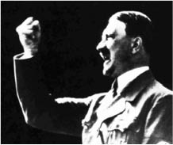
Hitler elleriyle konuşurdu.
Önceki cumhurbaşkanlarından rahmetli Turgut Özal da, gösterge hareketlerin bazılarını sıklıkla kullanırdı. Ben yaştakiler hatırlar, “İcraatın İçinden” programında, elinde daima pahalı bir kalem tutardı. Kalem neredeyse her kelimesine eşlik ederdi. Yükselen grafikleri anlatırken kelem de yükselir; işsizlikteki düşüşü anlatırken kalem düşüşü işaret ederdi. Adım adım kalkınma bölümünde, kalem sıçramalarla ilerlerdi. Konuşma esnasında el ya da kalem, gözlük gibi bir cisimle gösterge hareketleri yapmanın bir hilesi de vardır. Bu hareketler doğru yapılırsa, izleyicinin dikkati o yöne kaydırılabilir. Böylece sözler üzerinde karşınızdaki çok fazla durmaz, hareketlere yoğunlaşır. Satıcılar, yine bu hareketlere en fazla başvuran gruplar arasındadır ve sebebi de esas olarak budur. Kimi insanlar her şeyi çizerek anlatmayı tercih eder. Kalemi yokken konuşamaz neredeyse.
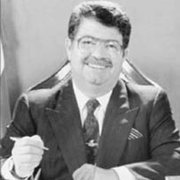
Turgut Özal, önemli açıklamalarda bulunurken kalemini elinden bırakmazdı.
Lise yıllarındaki rehber öğretmenimiz, ellerini oldukça yoğun bir şekilde kullanırdı. Fakat bu öylesine yoğun bir kullanımdı ki, neredeyse her kelimesine ya da hecesine bir baton hareket eşlik ederdi. Sanırım sırf bu nedenle konuşurken yorulurdu, çünkü elleri ve kolları hiç durmazdı. Fakat kendisi yorulurken, bizi de fazlasıyla yorardı. İster istemez kendisini dinlerken, gözlerimiz sürekli onda olurdu. Bu nedenle de takip etmekte zorlanır ve bir süre sonra sıkılarak dinlemekten vazgeçer, başka şeylerle ilgilenmeye başlardık. Görüldüğü üzere, çok fazla gösterge hareketi kullanmak da bir iletişim engeli olarak karşımıza çıkabilir. Dinleyenin ilgisini çok fazla dağıtabilir. Bu nedenle, gösterge hareketleri yaparken oldukça dikkatli olmak gerekir.
Bu hareketlerden birtakım anlamlar çıkarmak mümkündür. Beden dili kitaplarında bunların birçok örneği görülebilir. Örneğin eli aşağıyı gösterecek şekilde tutmak otoriteyi, eli, avuç içi yukarı gösterecek şekilde tutmak bir talebi ya da yalvarmayı sembolize eder şeklinde tanımlar vardır. Bunlar genel anlamıyla doğrudur ancak bunun için oturup kitap yazmanın fazla bir anlamı yoktur. Göstergelerin anlamları genel olarak herkes tarafından anlaşılabilir. Bir diğer konu, insanların bu hareketlere müdahale edebileceği, yani bilinçli olarak konuşmaları esnasında gösterge hareketler yapabilecekleridir. Siyasetle uğraşan kişiler, bu konuda eğitimler almaktadır. Bazıları bunu çok da yerinde kullanabilmektedir. Bu anlamda ben göstergeleri çok değerli ipuçları olarak nitelendiremiyorum.
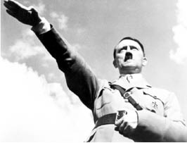
Hitler’in Nazi selamı, otoriteyi temsil eder.
Düzenleyiciler (Regulators)
Herhangi bir iletişim sisteminin başarılı olması için basit bir kuralın takip edilmesi gerekir: Konuşma sırasında anlaşma, yani kimin hangi sırayla konuşacağını belirlemek. Hangi iletişim biçimi kullanılırsa kullanılsın, veri alışverişi eğer iletişim kuranlar bu kurala dikkat ederlerse mümkün olabilir.193
Telsizle iletişim kurarken, kaynak kişi konuşmasının bittiğini ve sıranın karşıdakine geçtiğini belirtmek için, notunun sonunda ve her seferinde “Tamam!” diyerek bitirir. Tamam kelimesini duyan alıcı kişi, kaynağın konuşmasının o bölümünün bittiğini ve sıranın kendisine geldiğini anlar. Kaynak konuşmasının tamamının sonuna geldiğinde, konuşmayı tamamen sona erdireceğini “Bitti!” diyerek belli eder. Bu kurallar, telsizle iletişimin en önemli kurallarıdır ve karşılıklı konuşmanın akışı bu sayede belli olur. Benzer bir etkileşimin, yüz yüze iletişimde de olması kaçınılmazdır. Aksi halde, konuşma sırasını iletişime geçenler belirleyemez, herkesin bir anda konuştuğu ve kimsenin birbirini anlamadığı sağır diyaloglara döner. Nitekim sözlü kavgaların çoğunda, televizyondaki bazı tartışma programlarında böylesi iletişimsizliğe her zaman için şahit olunmaktadır.
Düzenleyici hareketler, iki ya da daha fazla sayıda etkileşime giren kişiler arasındaki konuşma akışını ayarlar ve düzenler; konuşmacıya devam etmesini, acele etmesini, tekrar etmesini işaret eder; detaylandır, daha ilginç ol, daha açık ol, diğerine konuşması için bir fırsat ver gibi talimatlar verir. En fazla rastlanan düzenleyici, başla onaylama hareketidir ve “Mımmm!” anlamına gelir. Regülatörlerin birçoğu mesaj içermez ancak konuşmanın devamlılığı için son derece gereklidir.194
Düzenleyici hareketlere baş sallama, “anlaşma gülümsemesi”, öne eğilme, uyarırken kaş kaldırma ve bunun gibi hareketler girer. Dinleyen, bir konuyu anlamadığında ya da kafasının karıştığını belirtmek için kaş indirme hareketi yapabilir. Kuşku durumunda ya da anlatılanın inanılmaz olduğunu belirtmek için kaş kaldırma hareketi yapılabilir. Konuşan kişi, dinleyenin sözünü kesmemesi için trafik polisi gibi elini kaldırabilir. Konuşma sırasının kendisine gelmesini bekleyen kişi ise sandalyeden havalanacakmış gibi ileri doğru eğilir, ağzını açar ya da dudak hareketleri yapar.195
Bazen karşımızdaki kişi, “bir şey söyleyecekmiş gibi” ağzını açar ya da bunu ima edecek hareketler yapar. Ancak sonra devam etmez ve susar. Merak eder ve sorarız. Bize bu izlenimi veren, yine düzenleyici hareketlerin gereksiz kullanımıdır ya da konuşmaktan vazgeçme halidir.
Konuşmanın devamlılığı belli kurallara dayanır. İkili diyalogda, konuşan kişi sözünü bitirdiğinde sıranın karşıdakine geçtiğini belirtmek için susar. Bu arada göz kontağını keserek bir an için uzağa bakar. Konuşmasının, sorduğu soruya vurgu yapmak amacıyla yüksek bir tonda söylenen son birkaç kelimesine ya da cümlesine uygun olarak başını belli belirsiz kaldırırken kaşlarını da aynı paralelde yükseltebilir. Böylece eğer dinleyen kişi yeterli sosyal yeteneklere sahipse konuşmacının sırayı kendisine verdiğini anlar ve konuşmaya başlar. Diyalog bu tarzda problemsiz bir şekilde devam eder.196
İnsanların konuşmasının bir ritmi vardır ve dinleyenler de bir senkronizasyon dahilinde bu konuşmayı dinlerler.197Konuşan ve dinleyen rollerini değiştirecekleri sırada konuşan dinleyenin istikametine doğru bakar, dinleyen ise konuşmasına başlarken başka bir yöne bakar. Akıcı konuşmalarda, konuşan, dinleyicileriyle daha fazla göz irtibatı sağlamaktadır. Eğer konuşma aksak ve hatalarla ilerliyorsa, yani konuşmacı konusuna hâkim değilse, göz teması belirgin bir ölçüde azalmaktadır. Bu tür ters durumlarda konuşmacı, uzağa bakarak dinleyicisine söyleyecek fazla bir şeyi olmadığı ve dinleyiciden daha az dikkat talep ettiğini belirtir. Ayrıca bu hareket, konuşan kişiye, düşüncelerini toparlamak için olanak tanır. Konuşurken başkasının gözlerinin içine bakmak, son derece dikkat dağıtan bir durumdur.
Düzenleyici hareketlerde,198bir iletişimci, duruş, göz kontağı ve pozisyon değişiklikleriyle şunları gösterir:
Yatıştırıcı Hareketler (Adaptors)
Jestlerin sonuncusuna yatıştırıcı hareketler199 (adaptör) ya da body manipulator adı verilir.200Rahatlama, beden ihtiyaçlarının tatmini, daha rahat bir pozisyona geçme vb. için yapılan hareketlere karşılık gelir. “Yatıştırıcı hareketler vücudun bir parçasının diğer bir parçasına yaptığı temaslardır. Baş kaşımak, burna dokunmak, elleri ovuşturmak, dudakları emmek bunlara örnek olarak verilebilir.”201
Yatıştırıcı hareketler, kişinin kendisine yönelik yaptığı, özellikle kendi kendisine dokunmak, kaşımak gibi hareketlerdir. Bu hareketler, çoğunlukla farkında olmadan yapılır ve iletişim kastı yoktur. Yatıştırıcılar, genellikle alıcılardan geri besleme almazlar ve insanlar bu hareketler hakkında pek yorum yapmazlar. Öte yandan, yatıştırıcılar, kişinin ruh halini oldukça yalın bir şekilde yansıtan, kendiliğinden hareketlerdir ve iyi bir gözlemci için müthiş ipuçları taşır.
Yatıştırıcılar, genellikle farkında olmadan yapılan hareketlerdir: Kendi kendimize dokunduğumuzu, kaşındığımızı, ovduğumuzu vs. pek fark etmeyiz.202İnsanlara yaptıkları bu hareketleri hatırlayıp hatırlamadıkları sorulduğunda hatırlayamazlar ve tekrarlayamazlar. Nadiren bir mesaj verme kaygısı söz konusudur. Ancak bu, bizim hareketleri gözlemleyerek bir anlam çıkaramayacağımız anlamına gelmez.203Normal şartlarda bu hareketler pek fark edilmezlerse de, belli bir amaca yönelik gözlemlendiğinde önemli ipuçları verebilirler. Örneğin, bir röportaj esnasında sakin görünmeye çalışan politikacının gerginliği tırnaklarını birbirine sürtmesinden anlaşılabilir.204Eski bir arkadaşından bahseden bir kadının boyun çukurunu tutması, o kişiye karşı rahatsızlığı olduğuna işaret edebilir.
Yatıştırıcı hareketler, rahatsızlık durumuna göre artış göstermekle birlikte, bazı insanlarda tam tersine, bu hareketlerde azalma, hatta donma davranışı gözlenir.205Yani herkeste yatıştırma hareketi olacak diye bir şey yoktur. Kişinin içdünyasına bağlı olarak değişiklik gösterebilir.
Yatıştırıcı hareketler limbik sistemle doğrudan ilişkilidir.206Genel olarak limbik beyin, rahatlık içeren bir duruma geçtiğinde, bu durum dışarıdan gözlemlenir ve kendisini memnuniyet ve yüksek güven şeklinde gösterir. Aynı limbik sistem, rahatsız olduğu durumları da dışa vuracaktır. Bu durumda beden dili, rahatsızlığı, gerginlik ve düşük güvenle ilintili bir şekilde gösterir. Limbik bir tepkinin ardından çoğu zaman yatıştırıcılar gelir.207Yapılan bir dizi çalışma, kendi kendine dokunmanın gergin bir durum ya da stresle bağlantılı olduğunu göstermiştir.208Yapılan bir çalışmada,209katılımcılara bir tanesi hoş doğa manzaralarından, diğeri ise kanlı cinayet ve vahşet görüntülerinden oluşan iki film seyrettirilmiştir. Bu esnada, sırtı monitöre dönük olan kişiye, seyrettikleri her iki filmi de çok güzel görüntülermiş gibi anlatmaları istenmiştir. Araştırma sonucunda, stresli film izleyerek karşısındakini kandırmaya çalışan grubun kendilerine daha fazla dokundukları, yani daha fazla yatıştırıcı hareketlere başvurdukları tespit edilmiştir. Böylece, filmden kaynaklanan rahatsızlıkları dışarıdan da gözlemlenebilmiştir.
Yoğun bir stres yaşadıktan sonra kendisini yeniden normal konumuna geçirmek isteyen beynimiz, bedenimizi rahatlatıcı (yatıştırıcı, adaptör) davranışlarda bulunmaya yönlendirir. Yatıştırıcı davranışların bazılarının kökenleri çocukluğumuza dayanır. Bebeklerin emme davranışı anne karnında bir ceninken başlar; çocuklukta başparmak emmeye dönüşür. Büyüdükçe parmak emme davranışı hoş görünmeyeceğinden; insanlar çiklet çiğneme, kalem ısırma gibi yöntemlere başvururlar.210Bazen aynı hareketleri tekrarlarlar. Elde kalem çevirmek, burun kaşımak, gözleri kırpıştırmak gibi hareketler, tekrarlandıkça insanları rahatlatabilir. Eğer bu hareketler çok abartılırsa, tik halini alabilir. Tırnak yeme hareketi kalıcı hale gelebilir. Dikkat edilirse, tikler, bu tür bir rahatsızlığı olan kişilerin her zaman yaptıkları hareketler olmakla birlikte; stresli ruh hallerinde ciddi miktarda artış gösterirler. Örneğin hızlı göz kırpma tiki olan bir şahıs, zihnen zorlandığında ya da endişelendiğinde, göz kırpma hareketini, gözle görünür bir düzeyde artırır. Vücut, otomatik bir şekilde, kişiyi rahatlatan tekrar hareketini artırmaktadır. Bu artış, bize kişinin duygu durumu hakkında çok değerli bilgiler verebilir.
Bazı yatıştırıcı hareketler, ritüel halini alabilir. Örneğin, kişinin aklına kötü bir şey geldiğinde, “Şeytan kulağına kurşun!” diyerek kulağını çekmesi ve tahtaya vurması kişiyi rahatlatır. Bunu yapmadığı zaman, kişi kendisini kötü hisseder. Bir iş arkadaşım, odasını her terk ettiğinde kilitlerdi. Anahtarı bir tur çevirdiğinde içinden bir şeyler mırıldanır, ikinci tur çevirdiğinde de yine ağzı kıpırdardı. Hiç sormadım ama büyük bir ihtimalle, her seferinde belirli bir duayı bir ritüel şeklinde tekrar ediyordu. Yine aynı arkadaşım, merdivenlerden inerken, belli bir sayılı merdivene geldiğinde birkaç saniye duruyor ve yine bir şeyler mırıldanıyordu. Bunları yapmak, kendisini iyi hissetmesini sağlıyordu. Bir şekilde yapılması engellense, büyük bir olasılıkla çok rahatsız olacaktı.
Fanatik futbol izleyicilerinin “totem” tabir ettikleri bazı hareket ya da davranışlar vardır. Maç izlerken hep belli bir koltuğa oturmak, belli adamlarla maç seyretmek gibi. Bunlar yine kişiyi rahatlatan hareketlerdir. Örneğin penaltı atışı esnasında ayakta durmayı totem haline getirmiş bir fanatik taraftarı zorla oturtmak, kişide tarif edilemez psikolojik sıkıntılara neden olabilir.
Yalan tespiti çalışmalarında da kendine dokunarak yatıştırma davranışlarından yararlanmaya oldukça yer verilmiştir. Yalan söylemek, özellikle usta olmayan yalancılar için oldukça kaygı verici ve yakalanma korkusunu da içinde barındıran, psikolojik bir süreçtir. Korku, psikolojik gerilmeyi artırır ve bunun sonucunda yatıştırıcı hareketler (kendi kıyafetlerine, ellerine, yüzüne, saçına vb. dokunmak) de artarak yalan söylediğine dair ipuçları verebilir.211
Mesleki tecrübe arttıkça, kolluk personelinin yatıştırıcı davranışları tespiti bir yetenek halini alır. Birçok polis, jandarma ya da yargı mensubu, görüştüğü kişinin yatıştırıcı davranışlara girdiğini otomatik olarak fark eder ve o noktaya baskı yapar. Kişi, bu hareketlerin karşı tarafa bir mesaj verdiği gerçeğinin farkında olsa bile, kendisine hâkim olması çok zordur. Bazen o kadar yoğun bir biçimde ipuçları veririz ki, kendimizi videoda izlesek şaşırır kalırız. Örneğin ben, karşımdaki kişinin yatıştırıcı davranışlarını görmek için fazladan bir çaba harcamam, çünkü bilen kişinin bu hareketler gözüne batar.
Yatıştırıcı davranışların en fazla meydana geldiği alanlar yüz ve boyun bölgesidir. İnsanların stres seviyesi arttıkça, yüz ve boyna dokunma da artacaktır.212Kadınlar en çok boyun çukuruna dokunurken erkekler daha çok çenenin altında, âdemelmasının üstünde kalan kısımlara dokunmaktadır.
İpucu: Bu hareket, erkeklerde çoğunlukla âdemelmasının üzerindeki yumuşak deriyi çekiştirmek şeklinde görülür. Bazen kişinin boynunun o kısmının kızardığını fark ederim. Anlarım ki sıkıntılı bir durum vardır ve o bölüm çekiştirmekten kızarmıştır. Neyi olduğunu, neyin ters gittiğini sorduğumda da kişi şaşırır. Oysa vücudu gerekli sinyali vermiştir.
Alnı ovmak, yanakları şişirmek, kravat düzeltmek, dudaklara dokunmak, sakalın okşanması, saçlarla oynamak, boyundaki gerdanlığı çevirmek yatıştırıcı davranışlar arasında sayılır. Bunun, beyne giden ve boyundan geçen yoğun miktardaki kılcal damarların stres altında kan akışından dolayı rahatsız olması ve bu nedenle dokunarak ya da masaj yaparak rahatlatma çabası olduğu değerlendirilmektedir.
Örnek Olay: İşyerinde, kalabalık bir sohbet ortamında, bir bayan arkadaş, öğrencilik yıllarını anlatıyordu. Aslında üniversitede tıp okumak istediğini fakat o yıllarda erkek arkadaşı olan şimdiki eşinin buna karşı çıktığını, bu nedenle okuyamadığını gülerek anlattı, fakat bu sırada boyun çukurunu eliyle kapattı. Biraz sonra akranı olan kuzenlerinin tıp okuyarak doktor olduklarını anlatırken, yine boyun çukurunu eliyle kapattığını izledim. Bunun üzerine, kendisine, bu tıp okuyamama konusunun kendisinde bir rahatsızlık yaratıp yaratmadığını sorduğumda; eşiyle mutlu olduğu için bunun kendisini hiç üzmediğini, ama içinde hep bir yara kaldığını ve aklına her geldiğinde kendini tuhaf hissettiğini belirtti. Doktor kuzenleri hakkında ne düşündüğünü sorduğumda ise, onları ne kadar çok sevse de aynı zamanda bir o kadar kıskandığını anlattı.
Fotoğraflarda bile yatıştırıcı hareketler, kendisini belli eder. Bazı insanların, başkalarıyla verdikleri samimi ve yakın pozlarda, yüzleri gülerken, elleriyle boyunlarını kapattıklarına şahit olursunuz. Yüzü gülse de, limbik sistemi kendisine ihanet etmiş ve rahatsızlığını elevermiştir. Yan yana poz veriyor olmaktan kaynaklanan rahatsızlığını, vücudu bir şekilde gösterir.
Bir başka yatıştırma davranışı, zihinsel zorlanmayla ilgilidir.213İnsanlar, konuşma yaparlarken, hareketsiz oturdukları zamana göre daha fazla kendilerine dokunurlar. Herhangi bir okuma parçası hakkında soruları cevaplandırırken de, o parçayı dinledikleri zamana göre yine kendilerine daha fazla dokundukları gözlenir. Zihinsel yoğunlaşma ya da stres daha fazla yatıştırıcı hareketi beraberinde getirir.
Bir diğer yatıştırıcı hareket türü ise, nesneler aracılığıyla yapılanlardır. Otomobil kullanmak, sigara içmek ya da bir aleti kullanmak bunlar arasında sayılabilir. Nesne-adaptörler, diğer adaptörlerin aksine küçük yaşlarda öğrenilebileceği gibi çok sonraları da edinilebilen hareketlerdir.214Tespih çekmek, çakı, anahtarlık vs. ile oynamak, kalem çevirmek, en fazla rastlanan hareketlerdendir. Kişisel gerginlik arttıkça, bu nesnelerle oynama sıklığı ve şiddeti de artmaktadır.
Sonuç olarak, kişilerin duygusal halleri, vücutlarına istemsiz olarak yansımaktadır. Bu ruh halini anlamak için, belirli davranış kalıplarını ve bunların anlamlarını ezberlemenin bir yararı yoktur. İnsanlar, yaşamları boyunca duygularını ve bunları göstermekle ilgili davranışları kontrol etmeyi öğrenirler. Sosyal hayat bunu gerektirir. Patronun sözlerinin kendisini ne kadar öfkelendirdiği ya da bunları saçma bulduğunu göstermek, çalışanın elbette işine gelmeyecektir. Bu, azarlanma ya da işinden olmayla sonuçlanabilir. Bu nedenle, çalışan kişi, bu duyguları göstermeden patronunu saygıyla dinlemeyi öğrenir. Ancak, insanın istem dışı davranış biçimlerini öğrenmek ve bunları gözlemlemek, bizlere çok da önemli ipuçları sağlayacaktır. Konuştuğumuz kişiyle ilgili yakınlığımız ne kadar fazlaysa ve ne kadar çok gözlem yapmışsak, bu hareketleri tespit etmek ve yorumlamak o kadar kolay olacak ve bize daha fazla bilgi sağlayacaktır.
Duygularımız
Duygular, içsel ya da dışarıdan gelen etkilere karşı zihnimizin verdiği; bazen dışarıdan gözlemlenebilen, bazen de fark edilmeyen psikolojik tepkilerdir.
Bir başka şekilde tanımlamak gerekirse; duygular, bizim yaşamımıza etkileri olan ve derhal harekete geçmemiz gereken olaylara karşı verdiğimiz, geçici biyolojik-psikolojik-sosyal tepkilerdir.215Duygular biyolojiktir, çünkü merkezi ve otonom sinir sistemlerinden kaynaklanan psikolojik cevaplar içerir. Psikolojiktir, çünkü ortaya çıkması ve düzenlenmesi için belirgin zihinsel süreçler gerektirir; zihni aktiviteleri yönlendirir ve davranışı motive eder. Ayrıca sosyal etkenlerle ortaya çıktığından ve ortaya çıkmasının sosyal anlamları olduğundan, sosyal bir süreçtir.
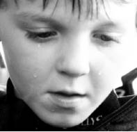
Duyguların kaynakları çok çeşitlidir.
Duygu; kişinin evrimsel ve kişisel geçmişinden etkilenen bir süreçtir. Bu süreçte, kişinin sağlığı ya da iyiliği açısından önemli olan durumlar hissedilir ve bir dizi psikolojik değişiklikler ve duygusal davranışlar bu durumlarla başa çıkmaya çalışır. Duygular, bizim minimum etkimizin olduğu, hızlı çalışan bilgi işlem sistemleridir.216Bu sayede karar vermek için düşünmemize gerek kalmaksızın, vücudumuz bizim yerimize tepki gösterir. Bozuk bir yumurtayı dişlersek derhal tiksinme reaksiyonu gelişir ve öğürmeye başlarız. Eğer bu olmasa, bozuk yumurtayı yiyerek zehirlenebiliriz. Araba kullanırken aniden önümüze araç fırlarsa birden korkar ve irkiliriz. Bunun sonucunda vücudumuz kendiliğinden tepki vererek frene basmamızı sağlar. Bu son derece anlık bir tepkidir ve düşünmek için yeterli zamanımız yoktur. Duygular bizim varlığımız için gerekli tepkileri tetikler.
Duygular, ruh halinden, mizaçtan ve ruhsal hastalıklardan farklıdır.217Ruh hali, duygulara göre daha uzun süreli bir süreçtir. Ruh hali, insanların çeşitli duygulara kapılmasına yol açar. Duyguları belirgin olaylar tetiklerken, ruh haline genellikle belirgin olaylar sebep olmaz. Uykusuzluk, yorgunluk, açlık gibi nedenler, insanların belirgin ruh haline girmesine neden olur. Örneğin oruç tuttuğu için aç ve susuz olan sürücüler, trafikte daha kolay öfkelenirler. Yalnızlık nedeniyle karamsar olan kişiler, duygusal bir filmde meydana gelen bir ölüm olayına daha kolay üzülebilir ve ağlayabilir.
Duygular, kişisel huylardan ya da eski deyimle mizaçtan da farklıdır. İnsanların bazıları saldırgandır; kimi neşelidir; kimi iyimserdir; utangaç ya da girişkendir. Bunlar, kişilerin duyguları değil, mizaçlarıdır; kalıcı özellikleridir. Bazıları genetiktir ve kolay kolay değişmezler. Kişilerin duyguları, mizaçlarıyla uyumlu olsa da, aynı duygu sürekli yaşanamaz. Saldırgan kişiler kolayca öfkelenebilirler ama her zaman öfkeli değildirler. Mutlu oldukları zamanlar da vardır. Çekingen insanlar her zaman korkarak yaşayamazlar. Arabanıza çarpıp kaçan kişi aklınıza her geldiğinde öfkelenebilirsiniz ama her an öfkeli olamazsınız. Uzun bir seyahate çıkan arkadaşınız geldiğinde çok mutlu olmuşsunuzdur ama sürekli yüzünüzde gereksiz bir sırıtma görüntüsüyle dolaşmazsınız.
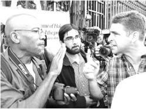
Duygular geçici, mizaç kalıcıdır.
Bazı psikolojik hastalıklar da duygularla ilintilidir ama aynı şey değildir. Duygular geçicidir ama hastalık süreklilik arz eder. Fobileri olan kişiler daha çabuk korkar; depresyondakiler daha çabuk üzülürler.
Aşağıdaki tablo, bu bahsi geçen olguların ilişkisinin daha net bir şekilde anlaşılmasını sağlayacaktır:218
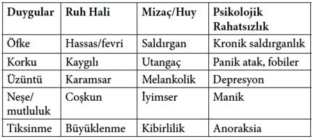
Duygu, Ruh Hali, Mizaç ve Psikolojik Rahatsızlık İlişkisi Tablosu
Matsumoto, D., Frank, M. G., Hwang, H. S. (2013).
Nonverbal Communication, science and applications.
Sage Publications: Los Angles, 17.
Duyguları İfade Etmek
“Yüzünüz, soylu efendim, bir kitap gibidir, onda insanlar garip şeyler okuyabilirler.”219
Kelimeler, duygularla başa çıkmanın bir yönüdür, duygusal olduğumuzda kelimeleri kullanırız ancak duyguları kelimelere indirgeyemeyiz.220Mehrabian’ın araştırması,221duyguların yalnızca %7’sini sözlerle ilettiğimizi, kalan %93’lük kısmı ise beden dilimiz ve ses tonalitemizle ilettiğimizi ortaya koymuştur.
Mehrabian, birçok araştırmacıyla birlikte aynı görüşü savunmaktadır: “Sözsüz davranış dar anlamıyla konuşmadan ayrı hareketleri içerir. Bu tanım, yüz ifadeleri, el ve kol jestleri, duruşlar, pozisyonlar ve vücudun ya da bacaklar ve ayakların çeşitli hareketlerini içerir.”222Bu tanımdan hareketle, sözsüz iletişimin en önemli unsurlarından olan ve duyguların öncelikle gösterildiği, yüz ifadelerinden bahsedilebilir.223 “İnsan vücudunun en dikkat çeken yeri yüz, yüzde en çok dikkati çeken yer ise gözleridir. Ancak, yüz ifadelerini anlamak o kadar kolay değildir, çünkü yüz karmaşık bir iletişim sistemi oluşturur.”224Yüzün zengin bir iletişim potansiyeli vardır. Kişiler arası tutumları yansıtır; diğerlerinin yorumlarına sözsüz geri iletim sağlar ve bazı bilim insanlarına göre, konuşmadan sonra en önemli bilgi kaynağıdır.225
Hissettiğimiz duygularımız, çoğunlukla yüzümüze vurur. Güçlü hissedilen duygular, çoğu zaman kendiliğinden bazı yüz kaslarımızı harekete geçirir.226Bu kas hareketleri, yüzümüzde duygu ifadelerini oluşturur. İfadeler sayesinde, sosyal hayatımızı sürdürürüz. Etkileşime girdiğimiz insanlara bazen “Neyin var, mutsuz görünüyorsun?” ya da “Hayırdır, ne kadar neşelisin?” gibi sorular yöneltiriz. Bu yargılara, karşımızdakinin yüz ifadelerinden ve ses tonundan varırız.
Birçok duygu söz konusu olmakla birlikte, bunların hepsi evrensel değildir. Tüm insanlarda evrensel olan, bir başka deyişle evrensel tepkiler verilen duygulara, öncelikli duygular adı verilir. Öncelikli duygu durumları için, farklı yüz kaslarının hareketleri söz konusudur ve bu duygular insanlar için ortaktır.227Ancak, bilimadamları arasında metotlarına, çalışılan grupların milliyetlerine, yönteme ve benzeri özelliklere bağlı olarak öncelikli duyguların neler olduğuna dair farklılıklar vardır. Örneğin, bazı çalışmalarda,228mutluluk, şaşkınlık, korku, üzüntü, öfke, tiksinti ve ilgi ifadeleri öncelikli olarak verilirken, bu çalışmaların devamında,229ilgi ifadesi öncelikli ifadelerden ayrılmıştır. Kimi kaynaklarda ise,230bu altı ifadenin yanına küçük görme ifadesi eklenmektedir.
Genel itibariyle yüzümüz dış dünyaya yönelik ekranımızdır. Her duygunun yüze yansıyan belli karakteristik özellikleri vardır.231Örneğin öfke; çatık ve alçalmış kaşlar, yukarı kalkmış gözkapakları, içe doğru bükülmüş dudak kenarları ve bastırılmış dudaklarla kendini belli eder. Korku; havalanmış kaşlar, yukarı kalkmış üst gözkapakları ve gergin bir ağızla anlaşılır. Tiksinme; düşük kaşlar, kırışmış burun, havalanmış üstdudak ve düşük altdudak, küçük görme; dudağın bir kenarının geri çekilmesiyle karakterize edilir.
Öfke
Korku
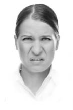
Tiksinti
Mutluluk; biraz daha yoğun yüz hareketleri gerektirir. Göz etrafındaki kaslar gerilir, göz kenarlarında karga ayağı şeklinde ifade edilen kırışma, yanakların kalkması ve dudak kenarlarının simetrik bir şekilde yukarı kalkması mutluluğu ifade eder. Üzüntü (mutsuzluk) ifadesinde ise kaşların iç kenarları yukarı kalkar, gözkapakları düşer ve dudak kenarları aşağı doğru kıvrılır. Küçük görme, dudağın bir kenarının geriye ve aşağı doğru asimetrik bir şekilde gerilmesiyle ortaya çıkar ve simetrik olmayan tek ortak yüz ifadesidir. Son olarak şaşkınlık ifadesi, kaşların tamamının ve gözkapaklarının havalanması ve ağzın açık kalmasıyla anlaşılır. Şaşkınlık ve korku ifadeleri birbirine çok benzediği için sık sık birbirine karıştırılır. Ekman,232ilkel kültürlerde bu iki ifadenin sıklıkla karıştırıldığını ifade ederken ileri (okuryazar) kültürlerde ayrılabildiğini belirtir. Aynı eserinde, bir yüzün 10.000’den fazla yüz ifadesi yapabileceğini de belirtmektedir. Bir başka kaynak ise, insan yüzünün 250 bin değişik ifadeyi yansıtma gücü olduğunu iddia etmektedir.233
Mutluluk
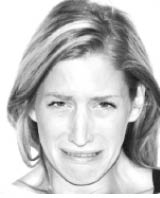
Üzüntü
Küçük Görme
Şaşkınlık
Burada, haddim olmayarak kişisel bir fikrimi de eklemek ve not düşmek istiyorum. Her ne kadar konuya ilişkin yapmış olduğum bir çalışma olmasa da, Ekman’ın 1969’daki çalışmasında belirttiği üzere, ilgi ifadesinin de evrensel olabileceğini değerlendiriyorum. Yabancı kültürlerle olan etkileşimlerimde, karşılaştığım her milletten insanın ilgi duydukları bir konu olduğunda ya da ilginç bir şey gördüklerinde, kaşlarını kaldırdıklarına ve alınlarını kırıştırdıklarına şahit oldum. Bu durum, benim gözlemlerimde hiç değişmedi. Eğer insanlar sizi dinledikleri ve ilgilendiklerini iddia ederlerken, kaşları düşükse ve gözleri kısıksa muhtemelen gerçekte ilgilenmiyorlardır. Ya akılları bambaşka bir yerdedir, ya da sıkılmışlardır ve oradan uzaklaşmanın bir yolunu arıyorlardır. Bu işareti gözlemleyerek, sohbeti çok uygun bir yerde kesebilir, karşınızdakinin bitirmesine izin vermeden inisiyatifi ele alabilirsiniz. Bu sayede, çok daha verimli bir iletişim kurabilir, sıkıcı bir adam yaftası yemekten kurtulabilirsiniz.
İnsan yüzünün aldığı evrensel duygu ifadeleriyle ilgili çalışmalar, son derece önemlidir. Bu çalışmalar sayesinde, bilimadamlarının duygularla ilgili çalışmaları daha hassas ve daha yüksek bir doğrulukla gerçekleşmiştir. Bu ifadeler, alıcı kişilere, karşılarındaki kişilerin içdünyalarıyla ilgili bilgi sağlar. Bu kişilerin davranışları kısmen tahmin edilebilir.
Duygular, evrensel algı süreçlerini de tetikler. Her duygu, farklı algısal süreçler gerektirir. Örneğin şaşkınlık ve korku görme alanımızın genişlemesine yol açar ki, bu duyguya neden olan çevreyi net bir şekilde gözlemleyebilelim. Bu sayede varlığımız için gerekli fiziksel koşul sağlanmış olur. Öfke durumunda ise gözler kısılır, görüş daralır ki öfkelendiğimiz kişi ya da şeye yeterince odaklanabilelim. Tiksinti, tiksindiğimiz nesnenin bizi bayıltmaması için koku algısını bloke eder.234
Yüz şunları gösterebilir:
Yüz, bir anlamda “zihnin tuvalidir” ve insan yüzünün ifadeleri, evrensel bir dil olarak hizmetimizdedir.236
Darwin’e göre, duygu ifadeleri yüz kaslarının fonksiyonel kullanımı sonucu ortaya çıkmıştır. Bu açıklama, belli duygu durumlarıyla bağlantılı olarak ortaya çıkan yüz hareketlerinin genetik mirasını gerektirecektir. Örneğin, tiksinme duygusu ifadesinin, kötü bir tat ya da kokunun ağız ve burunla iletilmesinden dolayı ortaya çıktığı değerlendirilebilir. Üzüntü, yorgunluktan kaynaklanan gevşeklik ve uzun süreli fiziksel acının etkilerinin birleşmesinden türemiş olabilir.237
Bu açıklama, Eibl-Eibesfeldt’in iddialarını da desteklemektedir:
“İnsanlar doğuştan motor hareketlerle donatılmışlardır. Bir bebeğin emmeyi öğrenmesi gerekmez; ayrıca gülümseyebilir, ağlayabilir, tutunabilir, daha birçok hareket yapabilir. Fakat birçok insan davranış kalıbı yalnızca büyüme sürecinde yavaş yavaş gelişir ve bunların hangilerinin basitçe olgunlaştığını ve böylece gelişirken programlandığını saptamamız zordur. Bununla beraber, çocuklar bazen kör bazen de kör ve sağır olarak dünyaya gelir ve bu çocuklar üzerine yapılan çalışmalar bu konuda son derece yararlı olabilir. Kör ve sağır çocuklar sürekli bir karanlığın ve sessizliğin içinde yetişirler. Annelerini asla göremezler ve seslerini duyamazlar. Eğer çevresel teorinin en keskin ilkelerini doğru kabul etsek, bu çocukların davranışlarının, sağlıklı büyüyen çocuklardan son derece farklı olmasını bekleriz. Fakat doğuştan kör ve sağır çocuklar üzerine yaptığım gözlemlerden böyle olmadığını tespit ettim. En hayati noktalarda neredeyse tamamen bizim gibi davranıyorlar. Örneğin mutlu olduklarında bizim gibi gülümsüyorlar, gülüyorlar ve bunu yaparken doğru sesleri çıkarıyorlar. Dahası bir şey kendilerini üzdüğünde, bizim gibi ağlıyorlar, tepiniyorlar, yumruklarını sıkıyorlar ve kaşlarını çatıyorlar.”238
Aşağıdaki fotoğraflarda, bebeklerde tiksinme hareketi, benim gözlemlediğim bir durumla da fotoğraflanmıştır. Henüz altı aylık olan ve anne sütü haricinde katı mamaları yemeye yeni başlayan bebeğin, tadını beğenmediği bir mama olduğunda karakteristik tiksinme hareketlerini yaptığı, ağzı ve burnuyla mamaya karşı direndiği ve nihayetinde kustuğu tarafımdan video çekimiyle tespit edilmiştir. Çalışmadan elde edilen kareler hem Ekman’ın, hem de Eibl-Eibesfeldt’in tespitlerini doğrular nitelikte ortaya çıkmıştır.
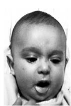
Tiksinme Hareketi
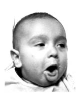
Tiksinme Duygusunun Tetiklediği Kusma
Duygularımızı hangi şartlarda nasıl ifade etmemiz gerektiğini sosyal normlar belirler.239Hangi durumda (cenazede, okulda, işyerinde vs.) nasıl bir yüz ifadesi takınılacağı ilerleyen yaşlarla beraber öğrenilir. Bu ifadelerle ilgili toplumsal baskı da söz konusudur. Örneğin, gelinden kına gecesi ağlaması beklenir: “Hem ağlarım, hem giderim.” Düğün gününde ise gülümsemeyen, üzgün bir yüz hali takınan gelinin ise zorla evlendirildiği kanaatine varılır. Küçük yaştan başlayarak bunları öğrenen bir genç kız, zamanı geldiğinde kendisinden beklenen yüz ifadelerine bürünür. Ayrıca, kültürlere göre de farklılıklar gözlenir. Örneğin, bir kültürün insanlarından cenazede yüksek sesle ağlamaları beklenirken, bir başka kültür ağırbaşlı duruşları öngörebilir.
Bakışlar Ve Göz Hareketleri (Gaze Behavıors)
Göz davranışı ve bakma, karşılıklı bakışma ve bunların tutumlar ile davranışlar üzerine etkileri, sözsüz iletişimin en önemli çalışma alanlarından biridir. Gözler birincil iletişim kanalıdır ve karşılaştığımız kişilerden tanıdık olsun ya da yabancı olsun ilk izlenimi göz temasıyla alırız. Gözler üzerine yazılmış sayısız şiir ve şarkı da, insanlar için gözlerin ne denli önemli olduğunu bir kez daha vurgulamaktadır. Şair Guillaume Bartas de Salluste gözler için, içdünyaya ait taşıdığı bilgiden dolayı ruhun pencereleri adını vermiştir.240
Ruhun Pencereleri
Gözler üzerine söylenen birçok deyim ve atasözü de gözlerin ve bakışların önemini anlatır: “Göz kulak olmak”, “Gözü gibi kollamak”, “Kaşı gözü oynamak”, “Bakışları güven vermemek” bunlara örnek olarak verilebilir.
Tarih boyunca insanlar gözlerle ve onların insan davranışları üzerindeki etkileriyle uğraşmışlardır.241Çevre, yeni nesneler ve yabancılar üzerindeki değerlendirmemiz başkalarının bakışlarından ve duygusal ifadelerinden aldığımız bilginin birleşimine dayanır. Duygusal ifadeler, duygu durumunu iletmenin önemli araçlarıdır ve bakışlar ifadenin anlamını güçlendirmek için çok önemlidir.242
Araştırmacılar, değişik duygusal durumlara göre, gözlerin ne derecede açık kaldığı ya da kırpıldığını araştırmışlardır. Bazıları aşırı göz kırpmanın, gerginliğin çeşitli seviyeleriyle bağlantılı olduğuna inanmaktadırlar (yalan söyleme durumunda örneğin). Psikiyatrlar, normal insanlar gözlerini nemli tutmak amacıyla dakikada 6 ila 10 kez göz kırparken, bazı psikiyatrik hastalarda bu sayının dakikada 100 kez kırpmaya kadar çıktığını bildirmektedirler. İnsanların bir obje için istekli olduklarında ya da derin düşüncelere yoğunlaştıklarında kırpma sıklığının arttığını gösteren çalışmalar mevcuttur.243Sinemada ve çizgi filmlerde de bu bir klişedir; karşısındakine istediği bir şeyi yaptırmak isteyen kadın ya da çocuk, onun gözlerine bakarken gözlerini kırpıştırır.
Göz teması, mesafeyle birlikte yakınlığın en önemli belirtisidir.244Bakış bir kişinin bakma davranışını nitelerken; karşılıklı bakışma, etkileşime geçen iki kişinin karşılıklı olarak birbirlerine, özellikle yüz bölgelerine bakmaları anlamına gelir. Dikkat ederseniz, konuşma süresinin tamamında karşımızdaki kişiye bakmayız. Normal bir konuşmada, konuşmacı karşısındakinin gözlerine, toplam konuşma süresinin %60’ında bakmaktadır.245Bakma türleri katılımcıların arka planları ve kişiliklerine göre, konuşulan konuya, ortamda ilgi çeken nesnelere, diğer kişinin bakış şekillerine göre değişiklik gösterir.
Bakış, insanlar arası tutumları gösterir. İnsanlar hoşlandıkları zaman daha fazla bakarlar.246Kişilerin birbirlerine olan yakınlıkları ya da samimiyetleri, birbirleriyle göz göze gelme ve bakışma sürelerinden anlaşılabilir. İnsanların sizden gözlerini kaçırmaları da, o kişilerin size karşı bir soğukluk hissettiği, rahatsızlığı olduğu anlamına gelebilir. Ancak, bakmanın da bir kültür ve alışkanlık olduğu, başkalarının yüzüne uzun süre bakamayan insanların, hoşlandıkları kimselere de uzun süre, hatta hiç bakamayacakları akıldan çıkarılmamalıdır. Örneğin Batı kültürlerinde insanlar, konuşma esnasında birbirlerine daha fazla bakarlarken, Japon kültüründe uzun süreli göz teması saygısızlık olarak nitelendirilebilir.
Bakma süreleri, cinsiyete göre de farklılık gösterir.247Her iki cinsiyetin bakışma ya da göz teması kurma süreleri karşılaştırıldığında, kadınların erkeklere göre daha fazla göz irtibatı sağladıkları gözlemlenir. Göz temasının ilgi ve kabul görmeyi belli ettiği değerlendirildiğinde; toplumsal hayatta daha sosyal varlıklar olarak ön plana çıkan kadınların neden bu şekilde davrandıkları da daha rahat anlaşılır.
Yapılan çeşitli çalışmalarda,248/249bir grup içerisindeki bakış alışkanlıkları gözlenmiştir. Alınan sonuçlarda, bir konuşmacının kendisine daha fazla bakan dinleyicileri hedeflerine ulaşmak için daha elverişli bulduğu ve daha fazla önem verdiği tespit edilmiştir. Ayrıca konuşmacının, dinleyenlerin kendisine daha fazla baktığı hallerde, kendisini daha güçlü ve daha yüksek statülü hissettiğini bildirmiştir. Yani, konuşan kişi kendisini statü olarak dinleyenlerden ne kadar güçlü bir konumda hissederse ya da konuya ne kadar hâkimse, dinleyenlere o kadar fazla bakar. İşyerindeki müdür, çalışanlarıyla toplantı yaparken, onlara uzun süreli bakarak tepkilerini almaya çalışır. Eğer azarlıyorsa, daha da baskın bir şekilde, karşısındakilere dik dik bakar. Bu tarzda doğrudan bakışlar, bir anlamda cezalandırma halini alır. Azarlanan çalışan ise, bakışlarını daha da fazla kaçırma eğilimindedir. Çünkü aynı oranda yöneticisine bakması, onun statüsü ve otoritesine rakip olduğunu belli ederken; karşısındakini öfkelendirebilir. Bu nedenle, toplumsal hayatta kimin kime ne kadar bakabileceği, adı konmamış kurallarla düzenlenmiştir. Bakışlarımız aracılığıyla öyle çok şeyler anlatabiliriz ki, bazen bir bakış saatler sürebilecek bir konuşmanın yerini alabilir.
Bakmanın dört işlevi vardır:250
Bakışlar - Konuşmanın Trafik Işıkları
İletişim kanalımızın açık olduğunu işaret etmek istediğimizde göz teması kurarız. Bazı durumlar ise, sanal bir şekilde iletişime mecbur eder. Garsonla restoranda görsel bir irtibat kurduğunuzda ona iletişim kanalınızın açık olduğunu ve bir şeyler söylemek istediğinizi işaret edersiniz, ya da dersinize çalışmadığınız bir akşamın ertesinde, okulda öğretmeniniz kim bu soruyu cevaplayacak şeklinde bir soru yönelttiğinde, göz teması kurmamaya çalışırsınız. Göz kontağı kurulmadığında, iletişimden kaçmak daha kolaydır.251
Tanımadığımız kişilerle karşılaştığımızda, tanımak amacıyla kısa bir bakış atarız. Ancak, eğer iletişimin devamı arzu edilmiyorsa, bakışma devam etmez. Eğer bakış süresi tanımaya yetecek süreden daha fazla uzarsa, bu olası bir konuşma arzusunu gösterir.252
Diyalog sırasında karşımızdakine bakmak, sözlü mesaj değerinde bir sözsüz mesaj göndermektir. Konuşanlar daha az baktığından, karşılıklı bakışma süresini konuşmacının bakışı belirler. Bu süreler boyunca dinleyicinin bir dinleyici cevabı ile dikkatini işaret edecek şekilde cevap vermesi olasıdır.253Bu cevaplar, gülümseme ve diğer yüz ifadelerini, başla onaylamayı ve “mımmm-hımmm” şeklindeki sesleri içerir. Bununla beraber bakış tek belirleyici değildir. Çünkü dinleyicilerin cevapları telefonda kişiler birbirini görmediğinde de meydana gelir.
Bakış değişiklikleri sayesinde, konuşmanın senkronizasyonu kontrol edilir. Bu bakış değişiklikleri konuşmanın zamanlamasıyla koordine edilir ve senkronizasyon sağlanır.254Eğer konuşan kişi, sözlerinin sonunda dinleyene bakmazsa, dinleyen sıranın kendisine geçtiğini hemen anlayamaz ve cevap vermeden önce daha uzun bir süre sessizlik olur. Yapılan bir deneyde, etkileşimcilerin aralarına birbirlerini görmelerini engelleyen bir cam konulduğunda; konuşmanın senkronizasyonunun bozulduğu tespit edilmiştir.255
Çünkü kişiler birbirlerini göremediklerinde, konuşma sırasının belirlenmesi için elde sadece ses tonu ve dil ötesi unsurlar vardır. Bunlar ilerleyen bölümlerde açıklanacaktır. Bu nedenle doktorlar, terapistler ve benzeri meslek grupları, göz temasını artıracak tedbirler almalıdırlar.
Doğal ya da atanmış liderin olduğu üç kişilik ortamlarda yürütülen çalışmalarda, liderin konuşmasının sonunda bir kişiye uzun süreli bakışının onu konuşmaya davet etmesi anlamına geldiği ortaya konulmuştur. Liderler iletişimin büyük kısmını yalnız kendilerine ayırmazlar,256ayrıca, kimin sözü ne zaman alacağını ve ne kadar süreyle konuşacağını belirlerler.257
Bakışlar Geribildirim Sağlar
Konuşurken karşısındakine bakmak, dinleyenlerin tepkilerinden anlık geribildirim almak için; dinlerken bakmak ise, dinlemeden alınan bilgiyi göz hareketlerini ve yüz ifadelerindeki değişiklikleri izleyerek artırmak için kullanılabilir.258
İnsanlar diğerlerinin tepkilerine ilişkin geribildirim almak istediklerinde, karşılarındakilere bakarlar. Eğer diğer kişi konuşana bakıyorsa, bu genellikle söylediklerine dikkat edildiğinin işareti olarak yorumlanır. Görülüyor olmak, son derece hayati bir öneme sahip olabilen bir sosyal tanınma formudur. Buna örnek olarak, Tarzan merdivenine tırmanan çocukların anne babalarının kendisini izlemeleri verilebilir. İzleniyor olmak güvenlik duygusu vermekle beraber aynı zamanda, çocuğun hareketlerine anlam katar. İzleyen biri olmadıkça, çocuğun hareketleri temelsiz, neredeyse hayali olur.259 Yine ilgi çekmek amaçlı olarak yaramazlık yapan bir çocuk, sık sık dönerek ailesine bakar ve tepkilerini görmek ister. Eğer bakan kimse yoksa, yaramazlık yapmak da anlamsız bir davranıştır.
Yetişkinlerde de benzer durum geçerlidir. Bir konuyu anlatan kişi, kendisinin dinlenip dinlenmediğini bakışlardan anlar. Dinleyen, kendisine bakmak yerine başka yerlere bakıyorsa dinlenmediği sonucunu çıkarır ve kırılır. Eğer konuşan statü bakımından dinleyenden üstünse, kırılma duygusu büyük bir ihtimalle, yerini öfkeye de bırakabilir.
Doktor-hasta etkileşimi üzerine yapılan çalışmalarda, hastalarıyla daha fazla göz irtibatı kuran doktorların, hastalarındaki psiko-sosyal stres seviyesini daha doğrulukla belirleyebildiği tespit edilmiş260 ve daha fazla psiko-sosyal bilgi aldıkları ortaya çıkmıştır.261
Bakış ve Düşünen Adamlar
Hem dinleyenler hem de konuşanlar, zor ve karmaşık fikirleri üretmeye çalışırken diğerlerine bakmaktan kaçınırlar. Bu bakış kaçırma (gözleri kapatma da buna dahildir) dikkati dışarıdan iç konulara kaydırma, bir başka deyişle dış uyaranları devre dışı bırakma anlamına gelir. Bakış kaçırma miktarı, soruların zihni zorlama derecesi arttıkça fazlalaşır.262
Bir başka görüşe göre ise dinleyenler konuşanlardan iki kat daha fazla süre bakarlar. Bunun birkaç sebebi vardır.263 Öncelikle konuşan kişi, konuştuğuna konsantre olabilmek ve düşüncelerini toparlayabilmek adına, karşısındakinin yüzüne bakmaz. Özellikle bir şeyi düşünürken, karşısındakine bakmak dikkati dağıtır. Dinleyen ise konuşanın sözleri haricindeki söylemediği şeyleri de öğrenmek istediğinden, karşısındakine dikkatle bakmak durumundadır. Kısacası konuşanın karşısındakine bakmayışı ilgisizliğinden değil, çoğunlukla zihinsel zorlanmadan dolayıdır.
Gözler Kalbin Aynasıdır
Bakış, kişiler arası tutumları işaret eder. İnsanlar hoşlandıkları kişilere daha fazla bakarlar.264Rekabetçi bir ortamda daha baskın olan kişiler, benzer şekilde yakınlık kurma ihtiyacı duyan ve ortama katılmak isteyen kişiler, daha fazla bakarlar.265 Âşık çiftler, tartışan diğer çiftlere oranla daha fazla karşılıklı bakışırlar.266Bunlar, bakışlar ve duygular ilişkisinde, herkesin bildiği ama bir kez daha tekrar etmek istediğim gerçekler.
“Gözden uzak, gönülden uzak...” sözüyle bir ilgisi var mı bilinmez ama, bakış ve karşılıklı bakışın oranı uzaklıkla birlikte düşer; yani insanların arasındaki mesafe arttığında, bakışma oranı da azalır.267 Yakındaki kişilerle daha çok bakışırken, uzaktakileri daha az dikkate alırız.
%100’lük bir göz kontağı durumunun (ki bu dik dik bakmak anlamına gelir) tanımlandığı bir anket çalışmasında katılımcılar; bu bakışı, ortalama seviyede bir göz temasından oldukça fazla olumsuz bir şekilde tanımlamışlardır. Bu bakışların genellikle ya birisinin özel alanını işgal ya da birisiyle dalga geçmek ve üstün gelmek için yapıldığı değerlendirilir; ikisi de kişiler arası tehdit tutumlarına karşılık gelir.268 Hayvanlar üzerinde yapılan gözlemler de benzer sonuçlara götürmektedir: İki hayvanın dik dik bakışma ile birlikte doğrudan karşı karşıya gelmeleri genellikle kavgayla sonuçlanır. Aslında bu sonuç, insanlar üzerinde de tekrarlanmış ve doğrudan uzun süreli bakışmada çiftlerden çekingen olanın daha önce gözlerini kaçırdığı tespit edilmiştir.269/270
Bakışın, ikna edicilik üzerinde de olumlu etkileri söz konusudur. Görüştüğü kişiyle daha fazla göz kontağı kuran kişi, daha ikna edici ve inandırıcıdır.271 İnsanlarda genel olarak, gözlerini kaçıran insanların yalan söylediğine dair yanlış bir inanış vardır. Bu, doğrudan göz temasının ayıp ya da saygısızlık kabul edildiği ülkeler dışında böyledir. Bu nedenle, karşısındakini ikna etme ihtiyacındaki bir kişi; iş görüşmesinde aday; patrona projesini kabul ettirmeye çalışan personel; mahkemede sanık; satış görevlisi, bunun için rahatsız etmeyecek bir sıklıkta göz temasını sağlamalı ve korumalıdır. Burada temas sağlanacak süre elbette çok çok önemlidir. Temas, karşısındakini oradan uzaklaşmak zorunda hissettirmemelidir. Kadınlar, aşırı göz temasını sarkıntılık; erkekler ise tehdit olarak algılayabilirler.
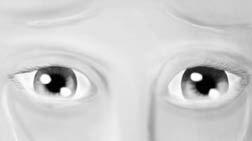
Ağlayan gözler ruh halini eleverir.
Bazen göz bölgesine bakmak, kişinin duygusal durumuna ilişkin oldukça fazla bilgi verebilir. Örneğin, kişinin gözlerinde yaş gördüğümüzde duygusal anlamda yüklendiğini düşünürüz. Ancak, bunu destekleyen ipuçları olmadıkça bu gözyaşlarının üzüntüden mi, fiziksel acıdan mı, mutluluktan mı, öfkeden mi ya da karmaşık duygular sonucunda mı ortaya çıktığını bilemeyiz. Gözlerin duygu ifadelerindeki yeri, ilgili bölümde açıklanmıştır. Kaşlar olmadıkça, salt gözlere bakarak duyguların tahmin edilmesi çok zordur. Bazı durumlarda yüzün tamamı görülmeden, o duygu tespit edilemez. Kanser tedavisi nedeniyle kaşları dökülen insanların duygularını anlamak zor olabilir. Ayrıca günlük hayatta gerçekleşen etkileşimlerde gözlerin başka ifadeyi, yüzün kalan kısmının başka bir ifadeyi yansıttığı durumlar sıkça meydana gelmektedir. Üzgün ya da öfkeliyken gülümsemeye çalışmak, böylesi bir etki uyandırabilir. Bunun dilimizdeki karşılığı, acı acı gülümsemektir.
Gözbebeklerinin Büyümesi ve Küçülmesi
İnsanların ve bazı hayvanların gözbebekleri, tıpkı bir objektifin diyafram ayarı gibi, ışık koşullarına bağlı olarak büyür ve küçülür. Ortamdaki ışık miktarı arttıkça küçülür ve giren ışık miktarını azaltarak görmeyi normalleştirir. Bu fonksiyonu olmasa, yoğun ışık koşullarında görmek asla mümkün olamazdı. Göz muayenesine gidenler, detaylı inceleme için göze damla damlatılarak gözbebeklerinin büyütüldüğünü bilirler. Bu durumda ilacın etkisi geçene kadar kişi gün ışığında bir şey göremez ve gözleri sürekli yaşarır. Doktorlar herhangi bir kişide hayat belirtileri ararlarken, gözüne ışık tutarak gözbebeklerinin boyutunun değişip değişmediğine bakarlar. Zayıf hayat belirtileri olsa da, gözbebeklerinin boyutu değişiyorsa kişinin yaşadığına karar verilir. Tam tersine ışık koşulları azaldıkça gözbebekleri olabildiğince büyür ve düşük ışık koşullarında görmenin devamını sağlar. Gece bir harekâta katılacak olan askerler araziye çıkmadan önce ışıksız bir ortamda bekletilir ve gözbebeklerinin küçülmesi, böylece arazi ortamında gözbebeklerinin küçülme süresi zarfında zorluk çekilmemesi sağlanır.
Ancak, gözbebeklerinin bir de duygusal ve algısal uyaranlarla büyüme ve küçülme fonksiyonu vardır ki, sözsüz iletişim işaretleri adına son derece faydalı ipuçları sağlamaktadır. Sempatik sinir sisteminin uyarılmasıyla gözbebekleri istemsiz bir şekilde büyürler; yani birinin gözbebeklerinin istem dışı genişlemesi, genellikle onun psikolojik anlamda bir hayli uyarılmış olduğunun işaretidir.272 Bir kişi heyecanlandığında, gözbebekleri normal büyüklüğüne göre dört kat daha büyüyebilir.273 Tam aksine, öfkeli, olumsuz bir ruh halinde gözbebekleri küçülür, “yılan gözler” olarak adlandırılan görünüme bürünür. Genellikle açık renk gözler, gözbebeklerinin büyümesiyle daha çekici görünebilir. Çünkü gözbebeklerinin büyüme hali çok net belli olur.
Gözbebeklerinin tepkileri çok eskilerden beri bilinmekle beraber, bunun bilimsel anlamda detaylı araştırılarak pupillometri adıyla ortaya çıkmasının geçmişi son birkaç on yıla dayanmaktadır.274 Pupillometri, tıp terimleri sözlüğünde “Pupillometre cihazı aracılığıyla gözbebeği çapının ölçülmesi” anlamına gelir.275Chicago Üniversitesi Psikoloji Bölümü’nün eski başkanı olan Eckhard Hess, pupillometri alanının öncüsüdür. Yaptığı çalışmalarda gözbebeklerinin büyüklüğünün, kişinin duygu durumundan etkilendiğini ve genel olarak kendilerini uyaran bir şey gördüklerinde kişilerin gözbebeklerinin büyüdüğünü tespit etmiştir.276Hess konuya ilişkin ilk yayınında,277 gözbebeklerinin büyüklüğünün görsel uyaranlarla ilişkili olduğunu, kadın deneklerin çıplak erkek fotoğrafları gördüklerinde gözbebeklerinin çıplak kadın fotoğrafları gördükleri hallerinden daha fazla büyüdüğünü, erkekler içinse tam tersinin geçerli olduğunu ortaya koymuştur. Bir başka çalışma ise,278 gözbebeklerinin büyüdüğünü tespit etmekle beraber baktıkları çıplak insan fotoğrafının cinsiyete göre fark etmediğini, aynı cinsiyetteki çıplak fotoğraflara bakıldığında da aynı şekilde gözbebeklerinin büyüdüğünü göstermiştir. Gözbebekleri, aynen cinsel organlar gibi; ancak çok daha çabuk ve ölçülebilir bir şekilde, seksi uyaranlar karşısında büyümektedir. Bu hipotezi destekleyen bir başka araştırmada,279erotik filmleri izleyen erkeklerin ereksiyon hali ile gözbebeklerinin büyümesi arasında bir paralellik olduğu tespit edilmiştir. Ayrıca, homoseksüel erkeklerin, çıplak erkek fotoğrafları gördüklerinde, tıpkı heteroseksüel erkeklerin çıplak kadın fotoğrafları gördüklerinde olduğu gibi gözbebeklerinin büyüdüğü saptanmıştır.280
Kadınların yumurtlama döneminde cinsel olarak daha aktif oldukları, karşı cinsle daha fazla ilgilendikleri ve onları daha çekici buldukları, çeşitli bilimsel araştırmalarla tespit edilmiş bir gerçektir ve türün devamı için zorunludur.281/282/283/284/285
Buna paralel olarak, kadınların normal dönemlerinde ve tahmini yumurtlama döneminde, gözbebeklerinin büyüme haliyle ilgili olarak karşılaştırmalı bir çalışma yapılmıştır. Bu çalışmada, kadınlara kendi erkek arkadaşlarının fotoğraflarının da içerisinde olduğu bir dizi erkek fotoğrafı gösterilmiş; yapılan değerlendirmelerde kadınların yumurtlama döneminde kendi erkek arkadaşlarının fotoğraflarını gördüklerinde gözbebeklerinin en fazla seviyede büyüdüğü ortaya çıkmıştır.286Bu sonuçlarla, kadınların gözbebeklerinin fiziksel büyümesi incelenerek, karşılarındaki kişilere karşı ilgilerinin ve cinsel istek seviyelerinin tespit edilebileceği değerlendirilmiştir.
Gözbebeklerinin irileşmesinin, türdeşlere karşı olan ilgiyi ilettiği uzun zamandır bilinmektedir. Bu amaçla, Victoria döneminde ve İtalyan Rönesansı’nda kadınların güzelavratotundan yapılan zehirli bir sıvıyı gözlerine damlatarak gözbebeklerini büyüttükleri ve böylece erkekleri daha fazla çekmeye çalıştıkları bilinmektedir.287/288 Bu noktadan hareketle insanların, başkalarının gözbebeklerinin iriliğine hassas olup olmadığı konusu incelenmiştir. Bu amaçla bir grup erkeğe sırayla şekildeki gibi ve benzeri kadın fotoğrafları gösterilirken beyinlerinin amigdala bölgeleri manyetik rezonans cihazıyla taranmıştır. Elde edilen sonuçlarda, amigdalanın, gözbebekleri irileştirilmiş resimlere daha fazla tepki verdiği ve bu fotoğraflar gösterilirken hareketliliğin oldukça arttığı gözlenmiştir. Deneyin sonunda, deneklere dikkatlerini çeken bir özellik olup olmadığı sorulduğunda hiçbiri gözbebeklerinden bahsetmemiştir. Bu fotoğraflarda tek fark, bir fotoğrafta kadının gözbebeklerinin fotoğrafla oynayarak irileştirilmiş olmasıdır. Sonuçta erkekler, bu iki fotoğraftan, gözbebekleri iri olan fotoğraftaki kadın için olumlu sıfatlar yüklerken, diğer fotoğraftaki kadın için olumsuz sıfatlar yüklemişlerdir.289
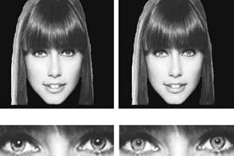
Gözbebeği Testi290
Sirklerde hayvan eğiticileri hayvanların, örneğin kaplanların ruh halini anlamak için onların gözbebeklerini sürekli izlerler. Bu sayede hayvanlarda saldırganlık işaretlerini tespit edebilirler. Ancak, ayılar, gözbebeğinin görünmemesi ve ağızlarının elastik olmaması nedeniyle öngörülemeyen olarak nitelendirilmekte ve dolayısıyla tehlikeli olarak değerlendirilmektedirler. Çünkü ani bir saldırıyı haber verecek ipuçları gözlemlenemez.291
Gözbebeklerinin büyümesi duygusal bir tepkiye doğrudan bir biyolojik cevaptır.292
Bu, yüksek heyecan seviyesini gösterir. Yalan söyleyen herhangi bir kişi, eğer patolojik bir rahatsızlığı yoksa ne kadar belirsiz olursa olsun bazı duygusal rahatsızlıklar hissedecektir. Bu rahatsızlık, kontrol edilemeyen birtakım fiziksel tepkilere neden olur. Bu tepkiler, saklanamaz, hemen hemen her seferinde kişiyi eleverir. Yalan söyleyenlerin gözbebekleri, doğru söyleyenlere göre daha büyüktür.293Bunun sebebi, yalan söyleyenlerin, doğru söyleyenlere göre daha gergin olması olabilir.
Bilişsel yük, kişinin tanıdık olmadığı bir konuda daha fazla zihinsel enerji harcaması ve zorlanması anlamına gelir.294Bilişsel yük teorisine göre, kişinin zihni belli bir çalışma hafızasına göre işler.295Bilgi işleme süreçlerinde, insanların sınırlı çalışma belleği ve sınırsız uzun süreli belleklerinin olduğu varsayılır. Eğer zorlanma artarsa, bu zorlanma insanlarda fiziksel birtakım işaretlerle kendini belli eder. Çalışma belleğinin kapasitesi yalnızca yedi elemanla sınırlıdır.296Kısacası, zihnin kapasitesi üzerinde bir yük yüklendiğinde “bilişsel yük” (cognitive load) ortaya çıkar. Bilişsel yük, bazı fiziksel hareketlerle kendini gösterir. Örneğin, bilişsel anlamda zorlananların göz kırpmalarında ve beden hareketlerinde azalmalar görülür.297Gözbebekleriyle ilgili araştırmalar, önce duygularla ilgili araştırmalara konu olduysa da; sonrasında, bilgi işleme süreçlerine doğru kaymıştır.298/299/300Artık, genel olarak gözbebeklerinin genişliğinde bilişsel işlem yükünden dolayı artış olduğu kabul edilmektedir.301/302/303/304/305Hatırlanması gereken rakam gruplarını dinlerken ve muhtemelen hafızaya yerleştirirken gözbebeklerinin kademeli olarak genişlediği, rakam hatırlandıktan sonra ise kademeli olarak küçüldüğü net bir şekilde ortaya konulmuştur.306/307
Sonuçta zihinsel olarak zorlanan insanların gözbebekleri büyür, bu bilinen bir gerçektir. Üniversite öğrencilerinin, karmaşıklık yönünden değişiklik gösteren cümleleri okurlarken, gözbebekleri ölçülmüştür.308 Alınan sonuçlar oldukça şaşırtıcıdır. Karmaşık cümleleri okuyan öğrencilerin gözbebekleri; aynı uzunlukta ama anlam yönünden daha basit cümleleri okuyan öğrencilerin gözbebeklerine göre daha fazla genişlemektedir.
Yapılan bir başka çalışmada da, katılımcılara gürültü ve konuşmaların anlaşılabilirliği yönünden farklılık gösteren üç ayrı ses kaydı dinletilmiş ve aynı zamanda gözbebeklerinin ölçümleri alınmıştır. Sonuçlar incelendiğinde, konuşmaların anlaşılabilirliği azaldıkça gözbebeklerinin daha fazla genişlediği tespit edilmiştir.309
Gözbebeklerinin, hafızayı zorlamakla da doğrudan bir ilişkisi vardır. İnsanların gözbebekleri, eski anıları ya da olayları hatırlamaya çalışırken, daha yeni anılara oranla daha fazla büyümektedir.310
Yani insanlar, uzak geçmişlerine yönelik anılarını hatırlamaya çalışırken, gözbebekleri daha fazla büyür. Bunun da nedeni, yine beynin zihinsel olarak zorlanmasına, vücudun verdiği biyolojik tepkidir. Bilişsel zorlanma ve gözbebeklerindeki büyümenin birbiriyle ilişkisinin gösterildiği çok sayıda çalışma vardır.311/312/313/314/315/316/317/318/319
Bu sonuca göre, insanın bilişsel yükünün artması, yani zihinsel faaliyetlerinin zorlanması sonucu gözbebeklerinde büyüme gözlemlenir. Ancak, akıldan çıkarılmaması gereken konu, bunun, bizim çıplak gözle gözlemleyebileceğimiz bir büyüme olmadığıdır. Ülkemizde ve dünyada da çok satan bir iletişim kitabının “Beden Dili” isimli bölümünde yazar, seminer ya da eğitim vermek için salonda konuşma yaparken, izleyicilerin gözbebeklerini takip ettiğini iddia etmektedir. İzleyicilerin gözbebeklerinde büyüme gördüğünde, izleyicilerin konuyla ilgili olduğunu; tersi durumda ilgisiz olduklarını anladığını belirtmektedir. Kitabın ya da yazarın adını, gereksiz bir polemik yaratmamak adına yazmıyorum. Ancak, bu iddia, bilimsel bir gerçeğin sömürülmesinden başka bir şey değildir. İnsanın, çıplak gözle, karşısında oturan kişinin gözbebeklerindeki büyümeyi bile kolay kolay fark edemeyeceği ortadayken; genellikle konuşmacıya göre daha karanlık bir ortamda olan ve kendisinden uzak oturan bir grubun gözbebeklerini bir konuşmacının takip etmesine fiziken imkân yoktur. Ben, bunca bilimsel bilgiyi aktarmakla beraber, bunun kolaycılığına kaçmayı doğru bulmuyorum. Bu nedenle kimsenin karşısındakinin gözlerine dik dik bakıp âşık ya da tahrik olup olmadığı; yalan söyleyip söylemediği testlerine girmesini tavsiye etmiyorum. Anılan bilgiler, bilimsel gerçekler olmakla birlikte, tespiti oldukça zordur ve özel cihazların yardımı gerekir. Ancak çok açık renkli gözlere sahip kişilerin gözbebeklerindeki değişimler; ışık koşullarının uygun olduğu durumlarda dikkatli gözler tarafından fark edilebilir. Bunları da son bir bilgi olarak paylaşmak isterim.
BEDEN DURUŞU (POSTURE)
Birkaç yıl önce, o zamanlar iki yaşında olan kızımı annemlere bırakarak eşimle beraber tatile çıktık. Ona görünmeden evden çıkıp gitmiştik ve gitmemize çok kızmıştı. On gün sonra tatilden döndüğümüzde kapıyı çaldık. Kapıyı kızım açtı ve bizi görür görmez sırtını dönerek bizden uzaklaştı. Hayal kırıklığına uğramıştık ama o bize ne kadar kırgın olduğunu göstermek istemişti. Beden duruşunun ne ifade ettiğini anlamak için sözsüz iletişim hakkında eğitim görmemiz gerekmemişti. Çünkü daha konuşmayı tam olarak çözememiş bir çocuğun, ne demek istediği, ne denli kızgın olduğu son derece anlaşılır bir durumdaydı.
Sırtını dönmek, en belirgin sözsüz mesajlardandır. Tamamen reddetme anlamına gelir. Etkileşime geçilen kişiyi, bu hareketten daha fazla etkileyebilecek olan, ancak hakaret ve küfür içerikli iletişim biçimleridir; bunlar dahi, bir anlamda iletişime geçme çabasıdır. Sırtını dönmek, iletişimin tamamen kesilme işaretidir. Birisine sırtını dönme ya da sırt çevirme diye dilimize yerleşmiş kavramlar vardır. Sırtını dönme, iletişimi kesme anlamına gelir ve son derece katı bir harekettir. Son dönemde, mahkemelerde de bu türden yaklaşımları görmekteyiz.320Sanıklar, mahkemenin varlığını tanımadıklarını ifade etmek amacıyla, mahkeme heyetine sırtlarını dönmektedirler.
Sözsüz iletişimde, beden duruşu son derece önemlidir. Gövdenin tamamını ilgilendirdiği için göze çarpar ve mesajları oldukça anlaşılır ifadelerdir. Beden hareketleri ve duruşlar, limbik sistemin motor davranışlarıyla doğrudan ilintilidir.321 Gövde, yaşam için hayati önemi olan iç organlarını bünyesinde barındırdığı için herhangi bir tehdit altında kalındığında ya da herhangi bir zorlanma durumunda, beyin öncelikli olarak bu bölgeleri koruma altına alır. Bedenimiz, olumlu ya da olumsuz uyaranlara karşı bölüm bölüm değil, bir bütün olarak tepki verir.
Beden duruşu, kişinin imzası gibidir. Çoğunlukla, tanıdığımız insanların, uzaktan duruşuna bakarak kim olduğunu anlayabiliriz. Duruş, ruh halini yansıtan en önemli işaretlerden sayılır. “Yorgun görünüyorsun, durgunsun, neyin var?” tarzı soruların sebebi, duruşların verdiği sinyallerdir. Yorgunsak kamburumuz çıkar; üzgünsek omuzlarımız düşer; kur yapıyorsak sırtımız dikleşir; kavga edeceksek omuzlarımız dikilir ve kollarımız ile bacaklarımız açılır; mahcupsak ya da utanmışsak kalıbımız küçülür. Bedenimizin tamamı bir organ gibi davranır ve duruşuyla gayet önemli mesajlar gönderir.
Baskınlık-Çekiniklik
Baskınlık-çekiniklik içeren sözsüz mesajlar çeşitlidir; detaylı ve gizli olabilir.322 Baskınlık, genel olarak güç, rahatlık, rahatlama ve korkusuzluk gösteren davranışlarla iletilir. Çekiniklik ya da pasiflik ise, zayıflık, küçüklük, rahatsızlık, gerginlik ve korku içeren davranışlarla kendisini belli eder. Yapılan çalışmalar rahatlamış bir duruşun, baskın olmanın gizli bir ifadesi olduğunu göstermiştir. Özellikle resmi ortamlarda, kimin statü olarak daha üst düzeyde olduğu, işgal ettiği alandan anlaşılabilir. Yüksek statülü kişiler, bulundukları ortamda daha geniş bir yer kaplarlar, daha açık otururlar, duruma göre bacak bacak üstüne atarlar. O kişiden statüsü düşük olanlar ise daha az yer kaplamaya ve fazla dikkat çekmemeye çalışırlar. Özellikle vali, genel müdür, yönetim kurulu başkanı, bakan gibi formal gücü yüksek kişilerin bulundukları toplantılarda, bu konu belirgin bir şekilde ortaya çıkar. Devlet adamları arasındaki resmi görüşmelerde, bu durum oldukça göze çarpar. Gazetecilere verilen pozlarda iki devlet adamı da aynı anda bacak bacak üstüne atar, ceketinin önünü açar, benzer duruşları sergilemeye çalışırlar. Bu duruşlar, aslında bir anlamda, devletin resmi duruşudur. Aynı duruşları sergilemeyen ya da fiziksel olarak sergileyemeyen devlet adamlarının bu türden pozları sonrası çok sert şekillerde eleştirildiklerine şahit olmuşuzdur.
Resmi olmayan ortamlarda da aynı yaklaşımlar gözlenir. Genel olarak sosyal ortamlarda baskın kişiler rahatlamış bir duruş sergilerken; çekinik kişiler daha gergin bir duruş alırlar. Buna paralel olarak yapılan çalışmalarda, rahat bir duruş sergileyen etkileşimciler, büyük fikir değişiklikleri yaratmada daha etkili bulunmuş; daha ikna edici oldukları gözlenmiştir. Benzer şekilde, baskın kişilerin daha dik ve açık bir duruş sergiledikleri de bilinen bir gerçektir.323
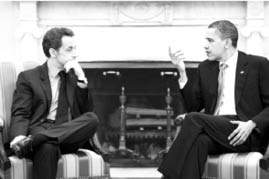
Devlet adamlarının birbirine eşit duruşları, devletin duruşudur.
Rahat duruş, otururken ya da ayaktayken beden ve uzuvlarının pozisyonları arasında asimetrinin artışı (kaykılmak gibi) olarak tanımlanır.324 Otururken geriye yaslanmak, dik oturmaktan ya da öne eğilmekten daha rahat bir duruştur. Otururken sallanma hareketleri yapmak yine rahatlık ve baskınlık ifade eder. Tersine otururken öne eğilmek, geriye yaslanmaktan ya da bacak bacak üstüne atmaktan daha gergin bir duruştur. Rahat ve rahatsız (gergin duruşu anlatan en güzel görsellerden birisi, hepimizin bildiği “Veresiye Satan-Peşin Satan” figürüdür. Çocukluğumuzda bu resimler birçok esnaf dükkânında, benim hatırladığım kadarıyla en çok kasaplarda görülürdü. Borç batağındaki esnaf, sıkıntılarından dolayı nasıl gerginse, aynen o şekilde duruşuna da bu gerginlik yansımaktadır. Oysa peşin satan esnafın işleri yolundadır ve bu rahatlıkla sandalyesine rahatça yaslanmakta ve bacak bacak üstüne atmaktadır.
Herhangi bir işyerinde ya da okulda kaykılarak oturan biri otoriteye karşı, saygısız ve asi bir duruş sergilerken; dik ve kolları bacakları paralel bir şekilde oturan birisi aynı oranda otoriteye boyun eğmiş ve saygılı bir görünüm çizer. Askerliğin temellerinden sayılan esas duruş, üstün, yani otoritenin karşısında gösterilebilecek en temel saygı ifadesidir. Doğal olmayan bir duruştur; kişinin kendisini bu duruşa uyarlaması gerekir ve başka bir meslek grubunda ya da klikte rastlanmaz. Otoriteye karşı saygı, boyun eğme, göreve hazır olma, mutlak itaat gibi, askerliğin temel prensiplerini içeren bir duruş biçimidir.
Duruşlar ve bunların saygıya dayalı ifadeleri ülkeden ülkeye değişiklik göstermektedir. Örneğin Türk ordusunda ciddi bir disiplinsizlik olarak kabul edilen, üstüyle konuşurken bacak bacak üstüne atma ya da elleri cebine sokma, başta Amerikan ordusu olmak üzere, dünyanın birçok ordusunda gayet normal bir davranıştır. Eğer eğitim esnasında değilse bu hareketler normal karşılanır.
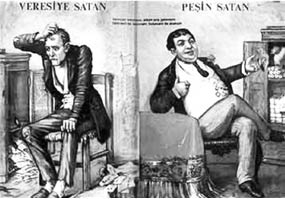
Rahatsız Duruş ve Rahat Duruş
Hoşnutluğu gösteren beden duruşları, yüz ifadelerine göre daha azdır.325Çünkü hoşnut olma/olmama hali, bedenimize fazla yansımaz. Hoşnut beden duruşları olarak, az hareketli rahat duruşlar; hoşnutsuz duruşlar olarak da gözle görünür kas gerginliği, yerinde duramamak ve sinirli hareketler değerlendirilebilir. Kendinizi ya da çevrenizi bu anlamda, kolaylıkla gözlemleyebilirsiniz. Beraberliğinden hoşlandığı bir kişiyle birlikte olan kişi, sakindir, heyecanlansa bile bu duruşuna olumsuz etki etmez. Hoşlanmadığı bir kişiyle birlikte olan ya da karşısındakiyle tartışan kişi ise durmadan kıpırdanır, ayağa kalkma benzeri hareketler yapar. Rahatsızlığı tüm bedenine etki eder.
Öne Doğru Eğilme
İlgilendiğimiz şeye ya da kişiye doğru eğiliriz. Öne doğru eğilme, geriye yaslanmaya göre daha pozitif bir duyguyu iletir.326 Çünkü geriye doğru yaslanma, kaçmanın bir türüdür. Hoşlandığımız şeylere ne kadar yakın durmak istersek; sevmediklerimizden de o denli kaçmak isteriz. Yapılan bir çalışmada,327 katılımcı ile deneyi yürüten işbirlikçi arasındaki pozisyonlar incelenmiştir. Sonuçta katılımcının sandalyesinde öne doğru eğilmesi, gülümsemesi, ellerini sabit tutması ve karşısındakiyle daha fazla göz irtibatı kurması halinde, katılımcının deneyi yürütene karşı daha sıcak bir yaklaşım içine girdiği tespit edilmiştir. İletişimcinin sıcaklığı, daha fazla göz irtibatı kurma, parmak uçlarıyla masada tempo tutma gibi sıkılma hareketleri yapmama, daha sık gülümseme ve daha öne eğik bir duruş sergilemeyle ilişkilidir.
Öne doğru eğilme, ilgiyi gösterir.
Vücudun Yönelmesi (Body Orientation)
Vücudu yönlendirme, eş deyişle iletişim kuranın kişinin omuzlarını ve bacaklarını karşısındakine doğru döndürme derecesi, alıcıya karşı hoşlanma-hoşlanmama durumunu gösteren bir ölçüm olabilir. Örneğin daha doğrudan bir yönelme, daha olumlu bir yaklaşımla ilişkilidir.328 Yani insanlar, bir şeyden ya da bir kişiden ne kadar hoşlanırlarsa, vücutlarını ona, o kadar fazla yöneltirler.
Yönelme ya da uzaklaşma tamamen limbik sistemimizle ilgili bir durumdur.329 Birine önem verdiğimizde, birinin yanında huzurlu olduğumuzda ya da arzu duyduğumuzda karın bölgemizi ona döneriz. Birinden, hatta birisinin ortaya attığı konudan rahatsız olduğumuzda, karnımızı hemen diğer yöne çeviririz. Örneğin, problemli bir çift birbirlerine bakıyor olabilirler. Ancak, karınlarını birbirlerine dönmezler. Karın yönelmesi bizim birincil iletişim kurma yöntemlerimizdendir: Sana güveniyorum, sana önem veriyorum, senden hoşlanıyorum anlamlarına gelir.
Etkileşimde bulunduğunuz kişi, size bakıyor olabilir. Konuşurken size gülümsüyor da olabilir. Ancak, eğer gövdesini size yöneltmediyse (araba kullanıyor olmak gibi zorunlu sebepler dışında), sizinle ilgilendiğini ya da sizden hoşlandığını söyleyebilmek oldukça güçtür.
Bu sadece çiftlerle ilgili de değildir. Jüri üyeleri, göz göze gelmekten bile hoşlanmadıkları tanıklar ya da avukatlardan diğer tarafa yönelirler.330 Burada espri, vücudun hassas bölgelerinin korumaya alınmasıdır. Gerçekte büyük bir tehlike olmasa da (fikri anlaşmazlık gibi), limbik sistem görece hassas olan karın bölgemizi korumaya çalışmaktadır. Limbik sistem, ayakları da aynı şekilde kontrol etmektedir. Ayaklar kişinin kaçarak kurtulmasından sorumlu olduğu için, limbik beyin kişiyi tehlikeli herhangi bir şeyden uzak tutmaya çalışır. Kimi zaman birisini dinleyen kişinin, gövdesi karşısındakine dönük olduğu halde, ayaklarının başka bir istikameti gösterdiği görülür. Ayakların farklı bir yön göstermesinin nedeni de, işte bu kaçma isteğidir.
Bir kafeterya ya da restoranda, karşılıklı oturan çiftlerin ayak duruşlarına dikkat edin. Ayakların duruşları, etkileşimin geliştiği yöne ya da kalitesine yönelik olarak, oldukça önemli sinyaller verir ama etkileşimdekiler bu kıymetli sinyalleri gözlemleyemezler. Her cümlenin ardından eğilip masanın altına bakmak, “Sen beni sevdiğini söylüyorsun ama bakalım ayakların ne diyor?” demek, teorik olarak imkânsız olduğu gibi ciddi bir kabalıktır. Ancak, uzaktan biz gözlemciler, bu hareketleri gözlemleyebiliriz. Dikkat edilirse, etkileşimden hoşlanıp hoşlanmama durumuna göre, ayaklar ya masanın altına çekilir, geride çapraz bir hal alır, ya da ilerleyerek etkileşimden hoşlanılan kişiyi gösterir. Kadınlar, eğer bu etkileşimden çok fazla memnun kalmışlarsa, ayakkabılarını çıkarıp ayakucunda sallayabilirler. Bu hareket, hoşlanma duygusunun en üst düzeye ulaştığı hal sayılabilir. Aynı şey erkekler için geçerli değildir, çünkü erkeklerin ayakkabılarını çıkarmaları son derece kaba bir hareket olarak algılanır. Ancak, erkekler de ayaklarını masa altından coşkuyla sallayabilirler. Buradan da erkeklerin etkileşimden hoşlanıp hoşlanmadıkları anlaşılabilir.
Son bir not olarak sinirli ayak hareketleri ile coşkulu ayak hareketleri arasındaki farkı belirtmek isterim. Sinirli, sabırsız ya da gergin durumlarda, genellikle tek ayak ve bacak sallanır. Nadiren iki ayak ya da bacağın birlikte sallandığı görülür. Ayak yere temas halindedir. Yoğun bir frekansla titretilir. Coşkulu durumlarda ise, ayak genellikle yere temas etmez. Bacak bacak üstüne atılarak, havada olan bacak, çok da sık olmayan bir ritimle ileri ve geri doğru sallanır. Gerginliğin ya da coşkunun şiddetine göre, bu ayak/bacak hareketlerinin de sıklığı artar.
Bukalemun Etkisi ya da Yansıtma331
Kalabalık bir mekânda otururken, kendinizi ortamdan soyutlayarak insanları izleyin. Hareketlerini takip edin. Neler yapıyorlar? Durmadan hareket ediyorlar öyle değil mi? Öne eğiliyorlar, arkalarına yaslanıyorlar, gülüyorlar, kaşlarını çatıyorlar, kollarını kavuşturuyorlar, ellerini kenetliyorlar, birlikte oldukları insana dokunuyorlar... Kısacası tüm bedenleri, durmaksızın bir hareket halinde. Şimdi de çiftlere dikkat edin. Bunların kadın-erkek çiftler olmaları şart değil. Erkek-erkek ya da kadın-kadın çiftlerde de anlatacağım konuyu görebilirsiniz. Bazı etkileşim çiftleri, konuşurken aynı hareketleri yaparlar. Mimiklerini tekrarlarlar. Biri şaşkınlıkla kaşlarını kaldırdığında, diğeri de kaldırır. Biri gülümsediğinde, diğeri de gülümser. Kollarını aynı şekilde çenelerinin altına koyarlar. Aynı şekilde bacak bacak üstüne atarlar. Benzer tarzda öne eğilirler. Birbirlerine dokunurlar. Konuşma ilginç ya da keyifli bir hale geldikçe bu tür hareketler artar, konuşma tatsız bir mecraya yol aldıkça davranış biçimleri ayrılır.
İnsanlar, çoğunlukla farkında olmadan, etkileşimde bulundukları insanların tavırlarını, hareketlerini, mimiklerini, yüz ifadelerini, duruşlarını ve diğer davranışlarını taklit etme eğilimindedirler.332Buna “bukalemun etkisi” adı verilir.333 Bu ismin verilmesinin sebebi, insanların bukalemun gibi renklerini değiştirerek kendilerini çevrelerine uyumlu hale getirmeleri değildir ama, davranış biçimlerini, duruşlarını ve yukarıda sayılan unsurları değiştirerek, etkileşime girdikleri insanlara uyumlandırmalarıdır.334 Bu taklit, bazen kişi karşısındakiyle istekli bir şekilde yakın ilişki içerisine girmek istediğinde bile, istem dışı olarak meydana gelebilir. İnsan farkında olmadan karşısındakinin hareketlerini tekrarlamaya başlar. Üstelik bu öylesine kendiliğinden gelişen bir faaliyettir ki, taklit edilen kişi bunun farkına bile varmaz. Taklit edildiği için rahatsız olmaz, aksine farkında olmadan daha rahat bir iletişime girmeye başlar.
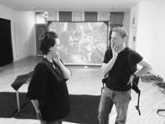
Taklit - Aynalama
İnsanlar, bilinçli ya da bilinçsiz olarak davranışlarını uyumlandırmayı, iletişimde uyumu sağlamak için yaparlar. Kişiler, karşılarındakiyle daha olumlu, daha uzlaşmacı ve ahenkli bir iletişime geçmeye başladıklarında, davranışlarda uyum daha sık gözlenmeye başlanır.335/336/337/Bir Amerikan atasözü bu yargıyı doğrular niteliktedir: “İltifatın en iyi yolu taklittir.”338Çünkü insanlar, kendileri gibi olan kişilerle beraber olmaktan hoşlanırlar; çevrelerine uyum sağladıkça, kendilerini daha rahat hissederler. Şehirde, apartman çocuğu tabir edilen bir tarzda yetişen çocuk, kırsal bir bölgede yaşamaya başlayınca, ortama son derece yabancı kalır. Arkadaşları tarafından dışlanmamak için, kendisini onlar gibi davranmaya yönlendirir. Sigara içmeye başlar, küfreder, toza toprağa bulanır. Bir süre sonra, oranın yerlileri için yeni gelen tuhaf yabancı çocuk olmaktan çıkar ve göze çarpmayan bir birey haline gelir. Yeni gelen çocuk da bu sayede rahat eder. Bunları bizzat yaşamış biri olarak aktarıyorum.
Askere gelenler için de aynı durum geçerlidir. Acemi asker, adı üzerinde, her şeye ve herkese karşı acemi ve yabancıdır. Eski askerlerin kendi aralarında geliştirdikleri bir jargon vardır, terhis için gün saymaya “şafak saymak” derler. Mercimek yemeği “kara şimşek”tir. Devre arkadaşının adı “tertip”tir. Keplerini daha havalı giyerler, elbiselerini bedenlerine göre küçültürler. Bunlardan uzak olan acemi er, aralarında derhal sırıtır ve kendisini belli eder. Kocaman kepi başında iğreti durur. Palaska vücuduna oturmaz, bakışlar donuk donuktur. Ancak kısa süre içerisinde öyle çabuk kendisini diğer arkadaşlarına uyumlandırır ki, yaklaşık bir ay sonra onun yeni gelmiş olduğu anlaşılmaz. Kıyafeti, yürüyüşü, konuşma tarzıyla kendisini onlara uyumlandırmıştır.
Bir Woody Allen belgeseli olan Zelig339 adlı film de aynı konuyu işlemektedir. Uydurma340 bir belgesel çalışması olan filmde, Leonard Zelig, Amerika’ya göç eden bir Musevi ailenin küçük oğludur. Sorunlu bir ailede geçen çocukluğu ve kendini dışlayan topluma kabul ettirme isteği, ona ciddi bir taklit yeteneği kazandırır. Zelig, birlikte olduğu kişilerin aksanını, hareketlerini, tavırlarını, hatta fiziksel görünümünü bire bir taklit etmektedir. Siyah ırktan birinin yanında, rengi dahi kararmaktadır. Aristokratlarla birlikteyken onlar gibi konuşmakta, Cumhuriyetçi olduğunu iddia etmekteyken; aynı partide hizmetkârlarla konuşurken halk ağzına inanılmaz bir hızla geçmekte ve kendini bildiği andan itibaren Demokrat olduğunu savunmaktadır. Zelig’i akıl hastanesine kapatırlar. Bu kez de psikiyatr olduğunu iddia eder ve onlarla aynı terminolojiyle konuşmaya başlar. Film, komedi unsurları içermesi amacıyla, çoğunlukla abartılara yer verse de, kendisine bukalemun adam adı yakıştırılan Zelig, taklit yeteneğinin zirvedeki halidir. Tedavisi esnasında, daha sonradan evleneceği doktoru, Dr. Eudora Nesbitt Fletcher, kendisini hipnoz altında konuştururken, neden başkası gibi davrandığını, yani başkalarını taklit ettiğini sorar. Bilinçaltından gelen cevap oldukça anlamlıdır: “Çünkü daha güvenli.” Verdiği cevap, taklit olayının sosyal nedenlerinden birini oldukça güzel bir şekilde açıklamaktadır. Taklit, bizim yabancıların yanında rahat etmemizi sağlar. Taklit etmek, bizi onlardan biri yapar. Ötekileşmekten kurtuluruz ve birisi haline geliriz. Öteki isek başkalarının dikkatini olumsuz yönde çekeriz ve iletişim kurmakta zaman zaman zorlanırız. Öte yandan onlardan biri isek, insanlar bizi aralarına daha çabuk kabul eder. Kendimizi rahat ve güvenli hissederiz, türdeşlerimizin arasındayızdır. Bir film klişesidir: Genç kız erkek arkadaşını, tanışmaları için ailesinin yanına getirir. Baba, bu genç adamdan fazla hoşlanmaz. Söz ikisinin ortak sevdiği bir alana gelir. Aynı takımı tutmaktadırlar ve oldukça fanatiktirler. Artık iletişim kurmak daha kolaydır.
Bir bilimkurgu filmi olan Prometheus’ta da benzer konuşmalar geçer.341 Uzayda yeni bir gezegene inecek olan araştırma ekibi, nefes alabilmek için özel uzay başlıklarını takmaktadır. Aralarındaki tek android olan David’in de başlık takması, araştırmacılardan Dr. Charlie Holloway’in dikkatini çeker. David’e sorar: “Neden başlık takıyorsun, nefes almıyorsun ki?” David’in cevabı oldukça ilginçtir: “Bu şekilde tasarlandım, çünkü siz insanlar türdeşlerinizle iletişim kurarken kendinizi daha rahat hissediyorsunuz.” Filmlerde android robotlar, her zaman için insan benzeri olarak tasarlanır.
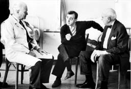
Zelig filminden bir sahne.
Prometheus filminden bir sahne.
İlk defa bir stada gidip maç seyrettiğinizi düşünün. Herkesin takımının formalarını ve takımının şapkalarını giydiği, atkılarına sarındığı bir ortamda, sizin takım elbise giydiğinizi hayal edin. Kendinizi yabancı hissetmez misiniz? Tüm taraftarlar yerlerinde duramıyorlar, çeşitli tezahüratlar ve marşlarla takımlarını destekliyorlar, siz sadece oturuyorsunuz. Takım gol atıyor, ortaklık yıkılıyor, sizde yine bir hareket yok. Tuhaf olmaz mı bu durum? Bu kadar farklılık rahatsız etmez mi sizi? Emin olun, taraftarlar da aynı oranda rahatsız olacaklardır. Eğer rahat etmek istiyorsanız, kendinizi o ortama adapte etmeniz gerekir. Kıyafetlerinizi değiştirmeniz, onlar gibi hareket etmeniz ve takımı desteklemeye katılmanız, sizi rahatlatacak, daha güvende hissettirecektir.
KGB’nin acemi ajanları, Rusya’nın kırsal bölgesinde, gizli bir göreve giderler. Bir barda otururlar ve etrafı gözlemeye başlarlar. Kıyafetleri ve davranışları o kadar farklıdır ki, çok fazla dikkat çekerler. Bar sahibi dayanamaz ve KGB’nin genel merkezine telefon eder. “Burada şüpheli hareketler yapan üç adam var. Bunlar sizin elemanlarınızdan mı? Buradan olmadıkları kesin. Eğer sizden değillerse, arkadaşlarla toplanıp bunları döveceğiz ve bardan atacağız. Bilginiz olsun diye arıyorum!”
İpucu: İnsanlar, kendileri gibi olmayan kişilerden hoşlanmazlar ve güvenmezler. Eğer insanlarla iş yapacaksanız, kendinizi farklı göstermek kadar büyük bir hata olamaz. Maden işçilerine sigorta satacaksanız, takım elbise giyip, parfümünüzü boca ederek yanlarına gitmeniz, eliniz boş olarak geri dönmenin garantisidir. Tulum giymeyin ama spor giyinin, anlamayacakları bir dilden konuşmayın; sadece zekânız ve bilginizle insanları sıkmadan etkilemeye çalışın. Çok daha başarılı işler yapacağınız kesindir. ABD başkanı, Irak’taki askerlerini başkomutan olarak ziyaret ederken neden üniforma giyiyor sanıyorsunuz?
Siyasiler ya da üst düzey bürokratlar da, gittikleri şehirlerde sempati toplamak amacıyla, onlardan biriymiş gibi davranırlar. O şehrin futbol takımının atkısı boyunlarında iken halka seslenirler. O yörenin aksanını taklit etmeye çalışırlar. Mesaj oldukça açıktır aslında: “Ben sizlerden biriyim, sizin evladınızım.” Eğer o kişinin, gerçekten bizlerden biri olduğuna inanırsak, ona oy vermemiz elbette daha kolay olacaktır. Buna bukalemun etkisinin ikna ediciliği adını veriyoruz.342Bu konuya birazdan tekrar döneceğiz.
ABD’li istihbarat elemanları, Kâbil sokaklarında dolaşırken uzun sakallarıyla hareket ediyorlar. İlk bakışta yabancı oldukları elbette anlaşılıyor. Amaç, daha rahat hareket etmelerini sağlamak. İstihbaratta kural, mümkün olduğunca o grubun bir parçası gibi görünmektir. İnsanlar, kendilerine benzeyen insanlara karşı daha rahat açılırlar ve güven duyguları artar. Bu prensibi bilen kişi için, o Amerikalıların neden Afganların yanına sürekli “Selamünaleyküm!” diyerek geldikleri çok da şaşırtıcı olmuyor.
Bukalemun, korunmak ve kendini rahat hissetmek için bulunduğu ortama kendisini benzetir.
Taklidin Evrimsel Kökenleri
İnsanlar, sosyal hayvanlardır.343/344/345/346/347Binlerce yıl önce gruplar halinde yaşamaya başlayan insanoğlu, bu özelliğini hiç kaybetmemiş, hep daha büyük sosyal gruplara adapte olmaya çalışmış ve böyle yaşamıştır. Düşündüğünüz zaman, gün içerisinde sürekli olarak sosyal etkileşimlerin içerisindeyizdir. Sabahları, bir aile evine uyanır ve aileyle kahvaltı ederiz. Servise biner, aynı işyerinden insanlarla her sabah ve her akşam yolculuk ederiz. İş yemeklerine çıkarız. Arkadaşlarımızla sinemaya gideriz. Tatiller yaparız. Birlikte içki içmeye bayılırız (özellikle biz Trakyalılar). Saymaya devam edersek sonu gelmez. Yalnız başımıza yaptığımız faaliyetler oldukça sınırlıdır. Bu sonsuz sosyal etkileşimi gerçekleştirmek için insanların ellerinde kullanabilecekleri birtakım sosyal enstrümanlar olmalıdır ki, etkileşimler sağlıklı yürüyebilsin. Araştırmalar gösteriyor ki, anılan enstrümanlardan bir tanesi hiç kuşkusuz insanlar arası taklittir.348Taklidin, insanlar arası yakınlaşmayı ve bir gruba kabullenilmeyi sağlaması, ilişki kurmaya yardımcı olması gibi birtakım sonuçları vardır. Ancak, taklidin kökenlerinin ya da ortaya çıkış nedeninin bu sonuçlara dayandığını düşünmek hatalı olabilir. Taklit kavramının kökeninin insan öncesi türlere dayandığı ve fiziksel hayatta kalmaya yönelik bir değeri olduğu; halen insanlar arasındaki yaygınlığının nedeninin ise sosyal anlamda hayatta kalma amacı olduğu, taklit kavramına evrimsel bakış açısının temelini oluşturur.349
Taklidin hayatta kalma yararlarının, sosyal hayatta otomatikleşmiş bir faaliyet olduğuna dair şöyle bir örnek verilebilir:350Tüm gününü açık alanda avlanarak ve dağ yemişleri toplayarak geçiren bir mağara adamı olduğunuzu hayal edin. Bunları yaparken, bir yandan da vahşi hayvanlara yem olmamak için etrafınıza sürekli dikkat ediyorsunuz. Yine bir gün, içerisinde bulunduğunuz kabilenizin insanlarıyla birlikte avlanıyorsunuz. Bu arada henüz daha insanlar arası konuşulan, gelişmiş bir dil olmadığını da hatırlatmalıyım. Toplama esnasında, diğer kabile arkadaşlarınız, bir anda var güçleriyle kaçmaya başlıyor. Ne yaparsınız? Orada durup bu insanlar neden kaçıyor diye düşünen mağara adamı büyük bir olasılıkla vahşi hayvan tarafından öldürülür, hiç düşünmeden diğerlerine katılıp koşmaya başlayan kişi hayatta kalır. Bu faaliyet, insanlık tarihinde ne kadar sık meydana gelirse, o kadar fazla otomatikleşmiş bir davranış olarak yerleşecektir.
Aslında, yukarıda verilen örnek sadece insan ırkına özgü değildir. Etobur hayvanların avı olan birçok otobur cinsinin de aynı hareket tarzına sahip olduğu bilinmektedir. Toplu halde yaşayan otobur hayvanlar bir arada otlanırlar. Bu esnada grubun baskın erkeği her an tetiktedir. Kendilerine doğru yaklaşan bir yırtıcı olduğunu hissettiğinde, bir anda aksi yöne kaçar. Bunu fark eden grubun diğer üyeleri de, hiç duraksamadan aynı yöne doğru kaçarlar. Hızlı olan, hareketi zamanında taklit edebilen kazanır.
Taklitçiliğe, maymunluk yapma ya da papağan gibi tekrarlama adı verilir. Oysa biz insanlar, taklit yapma yeteneğinde maymunlardan çok daha başarılıyızdır.351Hatta bir adım daha ileri götürülerek, taklitçiliğin aslında bizi “benzersiz insan” yapan özellik olduğu da söylenebilir. Taklit, insanların, şempanzelerin ve bonoboların diyalog kurma yeteneğinde ilk aşamayı oluşturmuştur352 ve bu sembolik iletişim, bu türlerin hedefe yönelik hareketleri doğrultusunda ortaya çıkmıştır. Ancak taklit yeteneği insanlarda öylesine gelişmiştir ki, bir noktadan sonra, bizi diğer primatlardan ayıran da yine bu yeteneğimiz olmuştur. Bu yetenek sayesinde, insanlarda dil öğrenme, müzik, sanat, el aleti yapma ve hatta empati kurma gibi medeniyeti oluşturan temeller atılmıştır.353
İnsanlar doğuştan taklit yapma yeteneğiyle doğarlar.354Bebekler daha birkaç günlükken diğer bebeklerin ağlamasıyla birlikte ağlamaya başlarlar, bir aylıktan itibaren diğer insanların gülümsemesine karşılık verirler ve diğerlerinin dillerini çıkardıklarını gördüklerinde dillerini çıkarırlar.355Benzer araştırmalar, 12-21 günlük arasındaki bebeklerin dillerini çıkaran, ağızlarını açan ve sıralı parmak hareketleri yapan yetişkinleri taklit ettiklerini ortaya koymuştur.356Devam çalışmaları ise, yeni doğanlarda dil çıkarma ve ağız açma hareketinin başlangıcını, 0,7 saat ila 71 saat arasına kadar geriletmiştir. Erken öğrenme ve sosyalleşme süreçleriyle ilgili daha önemli sonuçlar, 9 aylık bebeklerin yapılan bir davranışı 24 saat sonra tekrar edebildiğini,357/358/359/36014 aylık bebeklerin ise bir hareket serisini bir hafta sonra tekrar edebildiğini361 göstermiştir.
Primatlardaki taklit yeteneği üzerine yapılan nörolojik çalışmalar, bu alanda çok önemli bir bulguya varmıştır. Bu bulgu, son derece enteresan bir tesadüfün sonucunda gerçekleşmiştir.3621991 yılında, İtalya’nın Parma kentindeki özel bir araştırma bürosunda, bir maymun sandalyeye oturmuş ve araştırmacıların öğlen yemeğinden dönmesini bekliyordu. Kafasına bağlanmış kablolar, beynindeki hareket ve planlamayla ilgili bölümlere bağlanmıştı. Maymun herhangi bir cismi eline aldığında, beyninin o bölgesi harekete geçiyor ve monitörden “bip” sesleri geliyordu.
O sırada bir araştırma görevlisi, dondurma külahı elinde olduğu halde laboratuvardan içeri girdi. Maymun gözlerini ona dikti ve görevli dondurmayı dudaklarına götürüp her yaladığında, monitörden “bip” sesleri gelmeye başladı. Maymun hareket etmiyordu, ancak araştırma görevlisinin külahı kavrayışını ve dudaklarına götürüşünü izliyordu. Yani hareketi kendisi yapmasa da, başkasının yaptığı hareketi izlemek, beyninde aynı sinirleri uyarabiliyordu.
Parma Üniversitesi nöroloğu Giacomo Rizzolatti ve ekibi, araştırmalarının devamında, maymunun yerfıstığına da tepki verdiğini gösterdi. Daha da ilginci, maymun yerfıstığı kabuğunun kırılma sesini duyduğunda da aynı tepkiyi veriyordu. Benzer deneyler daha sonra, muz ile de tekrarlandı.
Rizzolatti ve ekibi, beynin ön, Broca Alanı’nda buldukları bu nöronlara “ayna nöronları” (mirror neurons) adını verdiler.363Daha sonra aynı sinirlere insanların ve gelişmiş memelilerin de sahip olduğu ortaya çıktı.
Bulunan ayna nöronlarının ilginç olan yönü şuydu: Birisi masanın üstünden bir bardağı aldığında, bunu izleyen beynin ön kısmındaki motor komuta nöronları, buna tepki vererek harekete geçmekteydi. Rizzolatti’nin bulduğu ayna nöronları ise, kişi başka birisini o bardağı alırken izlediğinde de harekete geçmekteydi. Bu, başka birisinin bakış açısını benimsemektir.364Bir hareketi izlerken, zihinde o hareketi yaşamaktır.
Deneylerin ileri safhasında, maymun ile araştırmacının eli arasına, görüşü engelleyen bir engel konulmuştur. Engelin arkasına da yiyecek yerleştirilmiştir. Deneyi yürüten kişi, elini yiyeceğe uzatmış; bu durumda, eline yiyeceği aldığını görmediği halde, maymunda yine benzer nöronlar harekete geçmiştir. Bunun açılımı çok enteresandır. Maymun, gözlemlediği kişinin hareketini kafasında canlandırmakta ve bir anlamda niyetini okumaktadır.
Mehmet, çiçeği tutan Ayşe’yi izlemektedir.365Mehmet, Ayşe’nin çiçeği koparacağını ve kendisine hediye olarak vereceğini tahmin etmektedir. Çünkü çiçeğe uzanan Ayşe aynı zamanda gülümseyerek Mehmet’e bakmaktadır. Onun gülümsemesi, Mehmet’e bu konuda ipucu vermektedir, çünkü yaptığı hareket ve Mehmet’in geçmişten getirdiği birikim, Ayşe’nin hedefinin çiçeği vermek olduğunu göstermektedir. Maymunlar ve insanlar sosyal türlerdir366 ve ayna nöronlarının, başkalarının hareketlerini tahmin etme becerisinin sosyal hayatta ne kadar hayati yönleri olduğu tartışılmaz. Ancak bir yönü daha vardır ki, bu da duyguları hissetme, yani empati kurdurma yönüdür.
Tiksinme, en temel tanımıyla, bir bireyin kendisi için çok kötü kokan ya da tadı olan bir şeyi denediğinde ortaya çıkan duygudur.367Deneylerde elde edilen bulgular, bir kişinin kendisi kötü kokan ya da tadı kötü olan bir şeyi denediğinde ortaya çıkan nöron hareketliliği ile deneyen başka birinin yüz ifadesini gören kişinin nöronlarının hareketliliğinin aynı olduğunu göstermektedir. Bu müthiş bir buluştur. Buna göre insanların, karşısındakinin duygusunu anlaması, duyduğu acıyı hissetmesi, kelime anlamıyla da doğrudur ve sebebi ayna nöronlarıdır. Yani bir kişi, karşısındakinin acısını içinde hissettiğini söylediğinde, bu gerçek anlamda hissetmesi anlamına gelir.
İnsanlar, karşılarındakinin duygusunu iki şekilde anlayabilirler. Bunlardan birincisi, algısal olarak kişinin içinde bulunduğu durumda mantıken ne hissedebileceğini çıkarsamaktır. Uzun yıllardır kendisiyle kalan köpeği ölen arkadaşının, neler hissedebileceğini tahmin etmeye çalışmak buna örnek olarak verilebilir. Onun çektiği acıyı, kişi içinde hissedebilir.
Diğerinde ise, beynin içerisindeki algılayıcılar tetiklenerek, kişinin aynı hissi yaşaması sağlanır.368Birisi eline çekici vurduğunda, onu izleyen kişinin yüzünü buruşturması bu yüzdendir. Çocuğumuz düşse ve dizi kanasa, aynı acıyı çok canlı bir şekilde hissederiz. İşkence yöntemlerinden bir tanesi, işkence gören insanların çığlıklarını, ağlamalarını, onlara vururken çıkan sesleri dinletmektir. Bu durumların her birinde, kişinin beynindeki ayna nöronları harekete geçmekte ve kişiye aynı duyguyu yaşatmaktadır. Birincisinde, duyguyu tahmin etmeye çalışırken, ikinci durumda duygu bizzat beyinde yaşanmaktadır.
İnsan beyni son derece oyuncudur ve çok kolay kandırılabilir. Masadaki meyve suyunu içmek için uzandığınızı zannederken, yanlışlıkla su bardağına uzandığınız ve içtiğiniz olmuştur mutlaka. Beyniniz meyve suyuna hazırlanıp onun tadını hissederken, içme suyunun tadı birden şok etkisi yapar insana. Kendi kendinize de deneyler yapabilirsiniz. Kendinizi çok yüksek bir gökdelenin çatısında, en kenarda yürürken hayal edin ve oradan hayalinizde boşluğa bakın. İçinizin bir tuhaf olduğunu hissedeceksiniz. Yükseklik korkunuz varsa, gerçek bir durummuş gibi korktuğunuzu göreceksiniz. Yedi boyutlu sinemalarda, oturduğunuz koltuk grubu hareket eder ve ekran görüntüleri size, lunapark oyuncaklarında hızla raylardan aşağı düştüğünüz izlenimi verir. Midenizde hissettiğiniz duygu, gerçeğe çok yakındır. Ayna nöronları, yüksek bir yerden aşağı doğru kayan kişinin duygularını size bire bir yaşatmaktadır. Sonuçta bu sinemaların mantığı, ayna nöronlarının etkisinden yararlanmaktır.
Karşınızda birisi limon gibi ekşi bir şey yediği zaman ağzınız sulanır. Köy düğünlerinde, nefesli çalgıları icra eden müzisyenlere, çocuklar böyle şaka yapar. Önünde limon yerler ve zavallı adam ağzının sulanmasından dolayı enstrümana üfleyemez hale gelir. Bazı kişiler bu tür yiyeceklere karşı o kadar hassastırlar ki, limon ya da tüylü şeftali gibi hassas olduğu yiyeceği görmek, hatta adını duymak bile kişiyi fena yapar, hasta olmasına yol açabilir. Yine bu olay da, ayna nöronlarının nasıl çalıştığı ve gözlemlediği duyguyu nasıl beyinde yaşattığını gösterir bir örnektir.
Cinsel içerikli film izlemenin mantığı da, bilimadamları tarafından ayna nöronları fenomeniyle açıklanmaktadır. Düşünüldüğünde bu tür filmleri izlemenin, cinsel doyuma ulaşmakla bir ilgisi yok gibidir. Sonuçta başka bir adam ya da kadın cinsel uğraşlar içine girmektedir ve kişinin bundan uyarılmaması gerekir, çünkü fiziksel bir uyaran yoktur. Fakat ayna nöronlarının faaliyeti öylesine güçlüdür ki, seyredilen film, hatta fotoğraf, izleyen kişiyi uyarmakta ve bazen cinsel doyuma dahi ulaştırmaktadır.
Yukarıdakine benzer bir örnek, örümceklerle ilgilidir.369Birisinin kolunda yürüyen örümceği gördüğümüzde, örümceği kendi tenimizde hissederiz. Örümcek korkusu olanlarda bu his daha da üst düzeye çıkabilir ve bayılmalarına kadar varacak bir süreç yaşanabilir.
Sanatta da benzer etkiler görürüz.370Parma Üniversitesi nörologlarından Dr. Vittorio Gallese’ye göre sanat, ayna nöronları gerçeğinden faydalanır. Araştırmalar, bir roman okuduğunuzda, nesnelerin pozisyonlarını, yazarın bakış açısından ezberlediğimizi göstermektedir. Duygusal filmlerde gözyaşı dökeriz, korku filmlerinde korkarız.
Desmond Morris, Çıplak Maymun adlı eserinde, yeni doğan bebeklerdeki gaz sancısını ilginç bir döngüyle açıklamaktadır.371Yeni doğanların gaz sancısının nedeni fiziksel olarak tam anlamıyla bilinememektedir. Morris’e göre, bu fiziksel bir rahatsızlıktan kaynaklanmamaktadır. Ona göre gaz sancısının nedeni, ancak ağlamasının sonucu olarak ortaya çıkan bir rahatsızlığın sonucudur. Endişeli anneler, özellikle ilk bebeğini kucağına alanlar, bebekleri ağladığında daha fazla endişeli ve kararsız davranırlar. Sakin anneler, ikinci ya da daha sonraki bebeğini yetiştirenler ise paniklemezler ve daha rahat ve kararlı davranırlar. Çevrenizde de görürsünüz, ilk bebekler, her gaz sancısında kendisini doktorda bulurken, sonraki bebekler, bir kenarda ağlayarak sancının geçmesini beklerler. “Bu yaşta bile insan yavrusu, annesinin temasındaki ‘güvenlik’ ve ‘emniyet’ ya da ‘güvensizlik’ ve ‘tehlike’ duygusunu ayırt edebilir ve bundan etkilenebilir.”372Tedirgin bir annenin çocuğuna kaçınılmaz olarak ileteceği tedirginlik işareti, derhal bebek tarafından algılanır. Bu duyguyu algılayan bebek daha fazla ağlayacaktır; çünkü annesinden kendisini korumasını isteyecektir. Annenin gülümsemeye çalışması daha da ters bir etki yaratacaktır, çünkü bir bebeği bu anlamda kandırmak neredeyse imkânsızdır. Bebeğin anneden aldığı korku ve tehlike sinyalleri ile sahte gülümsemesi çelişince, bebek daha da tedirgin olacak ve daha fazla ağlayacaktır. Ağlamaları arttıkça, bu kez de anne daha fazla tedirgin olacak, bu bebeğin ağlamasını daha fazla tetikleyecek, böylece bu kısırdöngü, durumu daha da kötü bir hale getirecektir. Bu durum, bebek yaklaşık dört aylık oluncaya kadar devam eder. Bu aydan itibaren bebek annesini özel koruyucusu olarak tanır, diğer insanlardan ayırmayı öğrenir. Böylece annenin verdiği sinyaller, tanıdık bir kaynaktan gelen sinyaller halini alır ve anneye güven duyarak ağlamayı keser. Morris’in buraya kadar anlattıkları son derece doğrudur ve konuyu açıklar durumdadır. Ancak bebeğin annesinin duygusunu nasıl anladığını ya da o kadar küçük bir bebeği duygu anlamında kandırmanın neden neredeyse imkânsız olduğunu açıklamamaktadır.
Nitekim bebeklerin 2-4 günlük olduklarında, başka bebeklerin ağlamalarına karşılık ağlamaya başladıkları; bunu yaparken yapay (gerçek olmayan) ağlamaları taklit etmedikleri, yalnızca gerçek ağlamaları duyduklarında ağladıkları belirlenmiştir.373Burada aktarılanlar genel olarak değerlendirildiğinde, ayna nöronları kavramı akla yatkın gelmektedir. Bebek için duyguyu anlamak hayati bir öneme sahiptir. Bu nedenle, beyindeki ayna nöronları, doğuştan itibaren fonksiyonunu yerine getirmektedir. Bebek, bu nöronlar sayesinde karşısındakinin duygusunu tahmin etmekte, çünkü o duyguyu beyninde yaşamaktadır. Yine bu nöronlar sayesinde annesinin kaygılı olduğunu hissetmekte; öte yandan onun gülümseyerek vermeye çalıştığı güven mesajı bu anlamda çelişmektedir. Annesinin bu çelişen mesajları bebeğin daha da fazla rahatsız olmasına neden olmakta ve bizim gaz sancısı olarak nitelendirdiğimiz ağlamalar, gitgide şiddetini artırmaktadır.
Çocuklarda otizmin nedeninin, ayna nöronlarının işlevini yerine getirememesi olduğu ileri sürülmektedir.374Otizm, antik Yunancada autos (kendi) kelimesinden türetilmiştir. Bu terim yerinde kullanılmıştır, çünkü otistik çocuklar sosyal etkileşime girmekten kaçınarak daha fazla kendi içerisindeki dünyada yaşamaktadırlar. İlk görüşte normal görünüşte bir çocuk olsa da, konuşmaya başladığınızda, çocukta bir tuhaflık olduğu hemen kendisini belli eder. Sizinle konuşmaktan kaçınır, göz teması kurmaz, durmadan kıpırdanır, öne arkaya sallanır ve hatta kafasını duvarlara vurur. Korku, öfke, hoşlanma gibi duyguları hissetse de; başka çocukların kolayca edindikleri, karşısındakinin duygularını anlayarak hissedebilme yeteneği gibi sosyal bir yetiden, ömür boyu mahrum olacaklardır. Bu duygu eksikliğinin sebebi, çocukta ayna nöronlarının fonksiyonlarını yerine getirememeleri olarak görülmektedir. Bu nöronlar, empati ve başkalarının niyetlerini anlama faaliyetiyle ilişkilendirildiğinden, bunların fonksiyonlarını yerine getirememesi otizm sebebi olarak değerlendirilmektedir.
Ayna nöronlarına ilişkin elde edilen sonuçlar, bilim dünyasında oldukça ses getirmiş ve birçok araştırmanın önünü açmıştır. Ramachandran’a göre, söz konusu sonuçlar, DNA’nın bulunmasının biyoloji bilimine yaptığı etkinin aynısıdır. Bu sayede, beynin gizemli pek çok özelliği çözülebilecek ve insanlığın yaşadığı büyük gelişimlere bir açıklama getirilebilecektir.
Hominid (büyük insansı maymunlar) beyni, şimdiki büyüklüğüne yaklaşık 250.000 yıl önce kavuşmuştur. Yani çeyrek milyon yıl önce, atalarımız ve biz aynı beyni taşımaktaydık. Ancak “standardize” çok parçalı el aletleri, dikilen kıyafetler, sanat, dini inanç gibi gelişmelerin yaklaşık 40.000 yıl önce gerçekleştiği düşünülmektedir. Bu gecikme neden gerçekleşmiştir? Neden insanlar çok daha önce, beyinsel kapasiteleri olmasına rağmen bu gelişmeyi gösterememiştir?
Yine insanlığın son yüz yılda kat ettiği muhteşem mesafeyi ele alalım. Neden bu kadar kısa zaman içerisinde bu gelişmelerin hepsi gerçekleşti? Nükleer gücün birdenbire ortaya çıkışı, otomobiller, uzay çağı, uçaklar, telekomünikasyon atılımları neden üç yüz yıl önce gerçekleşmedi? Bilimadamlarının “big bang” olarak adlandırdıkları büyük atılım neden çok geç bir zaman diliminde gerçekleşti?
Aslında insan beyni binlerce yıldır bu gelişmeleri başlatacak donanıma sahipti ve zaten uzun zamandır yeterli büyüklüğe ulaşmış olan beyinde, kritik çevresel tetikleyiciler, birtakım değişikliklere sebep oldu. Bu da bizi eşsiz insan yapan değişiklikleri meydana getirdi.375Bir yerlerde bazı insanlar, tamamen şans eseri olarak, alet kullanmak, sanat, matematik, konuşmak gibi birtakım buluşlar yaptılar ve insan beyninin muhteşem taklit yeteneği sayesinde bu buluşlar büyük bir hızla yayıldı. Evrim teorisinde şansın etkisi büyüktür. Bir yerlerde yapılan bir buluş diğerini tetiklemiş ve taklit yeteneği üst düzeyde olan insanlar, öğrenilenleri çok basit bir mekanizmayla diğer yerlere taşımışlardır. Kültür dediğimiz olgu, taklit ve kendisini tekrar sayesinde insanı yaratmış ve diğer hayvanlardan ayırmıştır. Bu sayede öğrenilen hiçbir şey unutulmamış, nesilden nesile aktarılmıştır.
Bu sofistike yetenekler neden insanlarda gelişti de maymunlarda ve gorillerde gerçekleşmedi sorusu zaman zaman gündeme gelmektedir.376Bu sorunun da ilginç bir yanıtı vardır: “Kanatlar da ön ayaklardan evrilmiştir, ama kimse insanların ön ayakları olduğu halde neden kanatları evrilmedi sorusunu sormaz.” Gerçek şudur ki, insanlardakine benzer taklit yeteneği, maymunlarda çok az görülür; şempanze ve gorillerin de yer aldığı büyük primatlarda ise son derece sınırlıdır.377İnsanı, bugünkü bildiğimiz anlamda insan yapan ve diğer primatlardan ayıran da bu gelişmiş taklit yeteneği ve kültürü oluşturma becerisidir.
Taklit/Yakınlık Kurma ve Uygulamaları
Taklit etmenin öncelikli sebebi hoşlanma ve yakınlık kurmaya çalışmadır. Bu alanda yapılan öncü çalışmalar, psikologlar ve hastaları arasında gerçekleşen sözsüz davranışların etkilerini inceleyen danışma ve klinik psikolojisi üzerine yapılan çalışmalar olmuştur.378/379/380/381Bunların arasından örneğin,382psikoterapi esnasında duruş uyumu gözlemlenmiş; taklidin seans esnasında arttığını ve bu artışın yakınlık kurmayla doğru orantılı olduğu tespit edilmiştir. Nitekim psikoterapi seansları esnasında, taklidin ne kadar işe yaradığını bilen bazı psikologlar, duruşlarını bilinçli olarak hastalarıyla uyumlandırmakta ve bunun sonucunda yakınlık kurmayı hedeflemektedirler.
Evrimsel bakışa göre incelediğimizde, atalarımız tek başına hayatta kalmanın mümkün olmadığı bir hayat sürmüşlerdir.383Yaşadıkları dönemin çevresel faktörleri, onları birbirlerine muhtaç kılmış, gruptan dışlanmak ölüm anlamına gelmiştir. O çağlarda insanlar, avlanırken, av ararken, yönlerini bulurken, birbirlerine dayanmak, yardım etmek ve destek olmak zorundaydılar. Birbirleri arasında uyumlu bir ilişki kurabilen insanlar hayatta kaldılar, üremeyi, nesillerini çoğaltmayı başardılar. Bir başka deyişle, gruptan dışlananların hayatta kalması zorlaşırken, grup içinde başarılı bir iletişim sürdürebilenler, evrimsel bir avantaja sahip oldular.384
Günümüzde de, gruptan dışlanmak önemli bir sorundur. Yapılan bir çalışmada, intihar eden ergenlerin intihar sebebinin %70’inin yalnızlık, yakın arkadaşlarının olmaması, içine atma ve aşırı sessizlik olduğu ortaya çıkmıştır.385Otizm gibi psikolojik bir rahatsızlığı olmayan tüm insanlar, bir gruba dahil olmak isterler. Bu sorun, sanki yalnızca çocukluk ya da gençlik yıllarında önemliymiş gibi görünse de, aslında yetişkinlikte de önemini kaybetmez. İnsanlar her zaman için bir gruba dahil olmak isterler. Futbol kulüpleri, meyhane geceleri, halı saha maçları, ava çıkmalar bu anlamda erkekler için ne ifade ediyorsa; kadınlar için de evlerde düzenlenen çay partileri, konken günleri, zayıflama kulüpleri aynı şeyleri ifade etmektedir. İnsanlar bir grubun içine girmek ve orada kabul görmek isterler. Gruba, sizi çok özel kılan bir özelliğiniz yoksa kendiliğinden kabul edilmez ve yakınlık görmezsiniz. Bunun için çaba harcamalı, yakınlık ve ilişki kurmalısınızdır.
Yakınlaşmayla ilgili hedefi olan kişilerin taklit davranışları gözlenmiştir.386Bu araştırmada bilinçli ya da bilinçsiz bir şekilde yakınlaşma/kabul görme hedefi olan insanların, hedefi olmayanlara göre karşılarındakini daha fazla taklit ettikleri belirlenmiştir. Araştırmanın ikinci safhasında, birinci safhada yakınlaşma hedefini gerçekleştirebilen ve gerçekleştiremeyen kişiler ikinci bir yakınlaşma testine tabi tutulmuşlardır. Burada ise, birinci seferde yakınlaşma hedefini gerçekleştiremeyenlerin daha istekli oldukları ve yakınlaşmak istedikleri kişilere karşı daha fazla taklit yaptıkları tespit edilmiştir. Bu araştırmanın ortaya koyduğu gerçek şudur: Davranış taklidi, insanların başkaları tarafından kabul görmek için bilinçsiz olarak yaptıkları bir stratejidir.387
Bu yaklaşımlar içerisinde taklit önemli bir yer tutmaktadır. Taklidin teori içerisindeki yerini test etmek için bir araştırma yapılmıştır.388Araştırmada, katılımcılara, kişilik özelliklerinin, grupla benzerliklerinin derecesini bildiren (uydurma) geribildirimler verilmiştir.389Örneğin Galatasaray’ı tutan bir bireye, grubun da hasta Galatasaraylılardan oluştuğu söylenirken; diğer Galatasaraylı deneğe, grubun tamamının fanatik Fenerbahçeliler olduğu belirtilmiştir. Daha sonra katılımcılar grup üyeleriyle (aslında işbirlikçi araştırmacılarla) bir araya getirilerek etkileşime sokulmuşlardır. Çalışmadan elde edilen sonuçlar, kendisinin gruptan farklı olduğu bildirilen kişilerin, gruba kendisini kabul ettirebilmek için, gruba benzediği bildirilen kişilere göre daha fazla taklit yaptığını ortaya koymuştur. Yani tuttukları takımın farklı olduğu söylenen denek, diğerine göre daha fazla taklit yapmıştır.
İnsanlar, grup içi sıkı bağlarla yaşarlar. Aile, akrabalar, okul arkadaşları, iş çevresi gibi gruplara insanlar daima ihtiyaç duyarlar. Grup içi bağlara çok ihtiyaç duyduğumuz için, grubun dışında bırakılmanın, bir başka deyişle dışlanmanın sonuçları yıkıcı olabilir.390 Grubun dışına itilen insanlar, grupta yeniden kabul edilmek için neredeyse otomatikleşmiş davranışlara girerler ki bunlardan birisi hiç şüphesiz kabullenilmek amaçlı yapılan taklittir.391
Yakınlık kurmak istediğimiz insanları taklit ederiz. Taklidin, empati, hoşlanma ve ilişkiyi artırarak, sosyal etkileşimlerde önemli rol oynadığı ileri sürülmüştür.392Bunun daha önce örneklerini verdiğim üzere, bilinçli yapılan duruş uyumlandırma, yansıtma gibi yaklaşımların etkisi olduğu gibi; taklit hareketleri büyük bir çoğunlukla bilinçsiz ve kendiliğinden gerçekleşir. Bu anlamda ileri sürülen hipotezleri destekler durumda birçok araştırma sonucu mevcuttur. Bu araştırmalardan en çok bilinenlerden biri, “bukalemun etkisi” kavramını da ortaya koyan çalışma olan, Chartrand ve arkadaşlarının Bukalemun Etkisi adlı çalışmasıdır.393Kendisinden sonra gelen çalışmalara da referans olmuş olan bu araştırmaya göre; kişinin davranışları, algıladıklarıyla doğru orantılıdır. Katılımcı kişilerden bazıları görüşme esnasında, deneyi yürütenler tarafından taklit edilmiş, diğer kısmı taklit edilmemiştir. Çalışma sonucunda yapılan görüşmeler, davranışları taklit edilen kişilerin deneyi yürüten işbirlikçi kişi (confederate) hakkında olumlu görüşle birlikte hoşlandığını belirtmiştir. Yine bu kişiler, taklit edilmeyen kişilere göre etkileşimin daha sorunsuz ve verimli geçtiğini, deney sonunda aktarmışlardır. Etkileşimde taklidin yakınlık sağlayıcı yönü, böylece ortaya konulmuştur.
Hiç anneleri, bebeklerini beslerken izlediniz mi? Özellikle kendisini besleme olayına çok kaptıran annelerin ağızları, kaşığı her uzattıklarında yiyecekmiş gibi açılır.394Bu fenomen, “başkasının rolünü almak”395kavramıyla açıklanmıştır. Futbol maçına kendini çok kaptıran kişilerin bacaklarında, kritik anlarda kas hareketleri görülebilir. Şoförün yanında oturan tedirgin yolcular, ara sıra kendi kendilerine gerilirler ve hayali frenler yaparlar. Darwin, kitabında,396vuruş yaptığı topu gitmesini istediği yerden sapan bilardocunun, bakışları, başı, hatta omuzlarıyla topu gitmesi gereken yere göndermeye çalıştığını anlatır.
Eşlerin, özellikle de uyumlu bir ilişki içerisinde olanların, yıllar içerisinde birbirlerine benzedikleri insanlar arasında genel kabul gören bir gerçektir. Bunun nedenini yine bir araştırma ortaya koymuştur.397Araştırmaya göre, 25 yıl ve daha uzun süre evli kalan çiftlerin, yıllar içerisinde pekişen empatiye yönelik taklit sayesinde, yüz ifadelerinin birbirlerine benzediği ve bunun da fiziksel bir benzerlik yarattığı ortaya konulmuştur. Benzerlik, evliliğin mutlu ve uyumlu geçmesiyle bağlantılıdır. Beraberlik süresince benzer duygulara verilen benzer yüz ifadeleri zamanla damar yapısına etki eder ve yüz görünümünde benzerliğin gözle görünür hale gelmesini sağlar. Böylece yaşlandıkça birbirine benzeyen çiftler ortaya çıkar. Bunun sebebi genetik özellikler değil, uzun süren uyumlu bir sosyal ilişkinin sonucudur.
Araştırmaların sonuçları, taklidin kişiler arası etkileşimlerde, eğer taklitçinin açıkça ikna etme isteği görülüyorsa ve taklit edilenin kâr beklentisi açıksa, bir ikna vasıtası olarak kullanılabileceğini göstermiştir.398Bu sonuç, esasen, günlük hayatta sıkça kullanılabilecek olan bir pazarlama metodudur. Örneğin ilaç tanıtımcıları, ilaçlarını doktorlara ve eczacılara bire bir ve yüz yüze tanıtmaktadırlar. Üstelik bu satışları üzerinden kotalarını doldurup kâr payı almaktadırlar. Benzer şekilde evleri gezerek satış yapan tanıtımcılardan, zincir tanıtımcı sistemlerinin elemanlarına, zayıflama ürünleri satıcı ve tanıtımcılarına ve ev oturmalarında kozmetik ürünler ile temizlik malzemeleri pazarlayan ev kadınlarına varıncaya kadar geniş bir yelpazede bu satışlar gerçekleşmektedir. Bu kişilerin, tanıtım ve satış esnasında oturdukları pozisyonları eğer mümkünse kendileri belirlemeleri ve taklit yöntemini istekli olarak kullanmaları, elde edecekleri sonuçlara çok ciddi bir oranda etki edebilir.
Taklidin ikna üzerine etkisi, bahşiş toplama üzerine yapılan bir araştırmayla perçinlenmiştir.399Bir restoranda, işbirlikçi bir garson araştırma için kullanılmıştır. Araştırmada, garson müşterilerin bazılarının siparişlerini ya kelimesi kelimesine, ya da özetleyerek kendilerine tekrarlamıştır. Diğer müşterilere ise herhangi bir tekrar yapmamış, yalnızca siparişlerini almıştır. Sonuçlar oldukça şaşırtıcıdır. Taklit edilen, yani tekrarlanan müşterilerin verdikleri bahşişin, diğerlerine göre anlamlı bir oranda fazla olduğu ortaya çıkmıştır. Basit bir sipariş tekrarı, müşterilerin bahşiş verme alışkanlığına önemli ölçüde etki etmiştir.
Askerlik mesleğinde de emir tekrarları önemlidir. Özellikle yeni katılan erlere ya da askeri öğrencilere emir tekrarı yaptırılır. Emri alan acemi, kendisine verilen emri birinci tekil şahısla tekrar eder. Böylece emrin anlaşılıp anlaşılmadığı ortaya çıkar. Konuyla bire bir ilgili olmasa da, benzerlik bakımından aktarmak istedim.
Sonuç olarak, insanlar arası etkileşimde duruş, kendiliğinden gelişir ve mesajları çok kolay bir şekilde, zorlanmadan anlaşılabilir. İnsanın neredeyse anlamsız hiçbir duruşu yoktur. Üstelik duruşlar, bizim çok eski dönemlerden beri getirdiğimiz, evrim yoluyla günümüze kadar ulaşan, eski işaretlerdir. Bu nedenle, insanların uğraşarak değiştirmeleri zordur. En azından yönelme ve uzaklaşma kavramını bilmek ve gözlemler sırasında uygulamak bile, iletişimde çok önemli avantajlar sağlayacaktır. Taklit de, kökleri çok gerilere giden insanlığın gelişiminde de, halihazırdaki sosyal iletişimde de çok önemi olan bir davranış biçimidir. Günlük hayatta, kabul görme, yakınlık kurma, iletişimi başlatma ve ikna etme gibi sebeplerle, bilinçli ya da bilinçsiz olarak sıkça kullanılan taklit davranışı; taktik bir amaçla kullanılarak, iletişimi yönlendirmemizi sağlayabilir. Özellikle insanlarla bire bir çalışan, pazarlamacılar, psikologlar, yöneticiler gibi meslek grupları, bu kullanımla oldukça önemli kazanımlar sağlayabilirler.
156 Knapp, M. Hall, J. A. (2006). Nonverbal communication in human interaction. 6. baskı. Kanada: Wadsworth, 5.
157 Akçay, E. (2012). Yalan işaretlerinin tespitinde sözsüz iletişim becerilerinin kullanımı. Jandarma Dergisi, 132, 28-35.
158 Mehrabian A. (1981-İlk Basım 1971), Silent messages: Implicit communication of emotions and attitudes. Wadsworth Publishing Company, 2.
159 Knapp, M. Hall, J. A. (2006). Age., 5.
160 Darwin, C. (1881). The expression of the emotions in man and animals.
161 Darwin, C. (2001). İnsan ve Hayvanlarda Beden Dili. Çev. Orhan Tuncay. İstanbul: Gün Yayıncılık Limited Şirketi.
162 Anadolu Üniversitesi İletişim Fakültesi’nde “Sözsüz İletişim” dersi yıllardır Prof. Ahmet Haluk Yüksel tarafından verilmektedir ve ülkemizde çok az sayıdaki üniversitede bu imkân sağlanmıştır.
163 Rapoport, A. (1982). The Meaning of the built environment: A nonverbal communication approach. Tucson: The University of Arizona Press, 52.
164 Rane, D. B. (2010). Effective body language for organizational success. The IUP Journal of Soft Skills, IV, 4, 17-26, 19.
165 Wood, B. S. (1981). Children and communication. Verbal and nonverbal language development. NJ: Englewood Cliffs, 171.
166 Wood, B. S. (1981). Age., 172.
167 Eller belde, kendine güven ve meydan okuma hareketi.
168 Pease, A. (1981). Body language. North Sydney: Camel Publishing Company, 11.
169 Smith, H. A. (1979). Nonverbal communication in teaching. Rewiew of Educational Research, 49, 4, 631-672, 648.
170 Schober, O. (1996). Beden Dili Davranış Anahtarı. İstanbul: Arion Yayınevi, 88.
171 Rane, D. B. (2010). Effective body language for organizationalsuccess. The IUP Journal of Soft Skills, IV, 4, 17-26, 18.
172 Yazıcı, H. (2010). Kişiler Arası İlişkiler ve Etkili İletişim (ed. Kaya, A.), Ankara: Pegem Akademi. 178-194, 180.
173 Knapp, M. Hall, J. A. (2006). Age., 225.
174 Online Etymology Dictionary, http://www.etymonline.com/index.php?search=gesture adresinden 29.01.2012 tarihinde erişilmiştir.
175 Cüceloğlu, D. (1995). Yeniden İnsan İnsana. İstanbul: Remzi Kitabevi, 45.
176 Yazıcı, H. (2010). Age., 189.
177 Ekman, P., Freisen, W. V. (1969). The repertoire of nonverbal behavior: Categories, origins, usage, andcoding. Semiotica, 1, 49-98, 68.
178 Knapp, M. Hall, J. A. (2006). Age., 226.
179 Ekman, P., Freisen, W. V. (1969). Age., 63.
180 Ekman, P., Freisen, W. V. (1972). Hand movements. TheJournal of Communication, 22, 353-374, 357.
181 Ekman, P. (1976). Movements with precise meaning. Journal of Communication, 26, 3, 14.
182 Ekman, P., Freisen, W. V. (1969). Age., 63.
183 Kanada’nın batısında bir eyalet.
184 Meissner, M., Philpot, S. B. (1975). The sign language of sawmill workers in British Columbia. Sign Language Studies, 9, 291-308.
185 İzciysen.blogcu (2012). 01.02.2012 tarihinde şu adresten ulaşılmıştır: http://izciysen.blogcu.com/kesfet/1388853
186 Ekman, P., Freisen, W. V. (1969). Age., 64.
187 Ekman, P., Freisen, W. V. (1969). Age., 65.
188 Knapp, M. Hall, J. A. (2006). Age., 231.
189 Kumin, L. ve Lazar, M. (1974). Gestural communication in preschool children. Perceptualand Motor Skills. 38, 708-710.
190 Knapp, M. Hall, J. A. (2006). Age., 231.
191 Efron, D. (1941). Gesture and enviroment. New York: King’s Crown.
192 Ekman, P., Freisen, W. V. (1972). Age., 359.
193 Lewis, D. (1978). The body language of children. USA: Souvenir Press, 68.
194 Ekman, P., Freisen, W. V. (1969). Age., 82.
195 Ekman, P. (1999). Emotional and conversational nonverbal signals in L. Messing & R. Campbell (ed.) Gesture, speechandsign, 45-55. London: Oxford University Press, 82.
196 Lewis, D. (1978). Age., 69.
197 Kendon, A. (1967). Some functions of gaze direction in social interaction. Acta Psychologica, 26, 22-63.
198 Scleflen, A., E. (1964). The significance of posture in communication systems. Psychiatry, 27, 316-31.
199 Navarro J., Dr. Karlins, M. (2008). Beden Dili. Eski FBI Ajanından İnsanların Bedenini Okuma Rehberi. İstanbul: Alfa Yayınları, 39.
200 Ekman, P. (1977). Biological and cultural contributions to body and facial movement, in John Blacking (ed.) A.S.A. Monograph 15, The Anthropology of the Body. London: Academic Press, 46.
201 Ekman, P. (1977), 47.
202 Schober, O. (1996). Beden Dili (Davranış Anahtarı). İstanbul: Arion Yayınevi, 68.
203 Ekman, P. (1977). Biological and cultural contributions to body and facial movement, in John Blacking (ed.) A.S.A. Monograph 15, The Anthropology of the Body. London: Academic Press, 47.
204 Schober, O. (1996). Age., 68.
205 Ekman, P. (1999), 43.
206 Navarro J., Dr. Karlins, M. (2008). Age., 39.
207 Navarro J., Dr. Karlins, M. (2008). Age., 41.
208 Knapp, M. Hall, J. A. (2006). Age., 286.
209 Ekman, P., Freisen, W. V. (1974). Detecting deception from the body or face. Journal of personality and social psychology, 29, 288-298.
210 Navarro J., Dr. Karlins, M. (2008). Age., 42.
211 Vrij, A. (2008). Detecting lies and deceit. West Sussex: John Wiley&Sons Ltd., 39.
212 Navarro J., Dr. Karlins, M. (2008). Age., 57.
213 Knapp, M. Hall, J. A. (2006). Age., 286.
214 Ekman, P., Freisen, W. V. (1969). Age., 90.
215 Matsumoto, D., Frank, M. G., Hwang, H. S. (2013). Nonverbal Communication, science and applications. Sage Publications: Los Angles, 17.
216 Tooby, J. ve Cosmides, L. (2008). The evolutionary psychology of the emotions and their relationship to internal regulatory variables. In M. Lewis, J. M. Haviland-Jones ve L. Feldman Barrett (ed.), Handbook of emotions (3rd ed., pp.114-137). New York: Guilford Press’ten akt. Matsumoto, D., Frank, M. G., Hwang, H. S. (2013). Age., 17.
217 Matsumoto, D., Frank, M. G., Hwang, H. S. (2013). Age., 18.
218 Matsumoto, D., Frank, M. G., Hwang, H. S. (2013). Age., 19.
219 Shakespeare, Machbeth, Sahne 1’den aktaran Knapp ve Hall, 2006: 295, repliğin İngilizceden çevirisi: Orhan Burian.
220 Ekman, P. (2003). Emotions revealed: Recognizing faces and feelings to improve communication and emotional life. New York: Times Books, 13.
221 Mehrabian A. (1981-İlk Basım 1971), Silent messages: Implici tcommunication of emotions and attitudes. Wadsworth Publishing Company, 76.
222 Mehrabian A. (2007). Nonverbal communication. İkinci baskı, ilk basım 1972. London: AldineTransaction, 1.
223 Tomkins, S. S. (1962). Affect, imagery, consciousness. The positive affects. New York: Springer.
224 Cüceloğlu, D. (1995). Yeniden İnsan İnsana. İstanbul: Remzi Kitabevi, 42.
225 Knapp, M. Hall, J. A. (2006). Nonverbal communication in human interaction. 6. baskı. Kanada: Wadsworth, 295.
226 Vrij, A. (2008). Detecting lies and deceit. West Sussex: John Wiley & Sons Ltd., 64.
227 Ekman, P., Freisen, W. V. (1969). The repertoire of nonverbal behavior: Categories, origins, usage, andcoding. Semiotica, 1, 49-98, 71.
228 Ekman, P., Freisen, W. V. (1969).
229 Ekman, P. (2003). Age., 10.
230 Matsumoto, D. (2011). The Seven Basic Emotions: Do You Know Them? İnternet sayfası, erişim tarihi: 28.12.2011. www.humintell.com/2010/06/the-seven-basic-emotions-do-you-know-them/
231 Matsumoto, D. (2011). Age.
232 Ekman, P. (2003). Age., 10.
233 Zıllıoğlu, M. (1993). İletişim Nedir? İstanbul: Cem Yayınları’ndan akt. Gökçe, Orhan (2006). İletişim Bilimine Giriş. Ankara: Siyasal Kitabevi, 57.
234 Matsumoto, D., Frank, M. G., Hwang, H. S. (2013). Age., 23.
235 Ekman, P. (2009). Ne Düşündüğünü Biliyorum (Orijinal adı: Telling Lies). İstanbul: Koridor Yayıncılık, 112.
236 Navarro, J. (2011). Intention, Desire, Denial & Reluctance Behaviors of the ignored limbic behaviors which give clues to thoughts & feelings. Spycatcher. http://www.psychologytoday.com/blog/spycatcher/201107/intention-desire-denial-reluctance-behaviors adresinden 16.02.2011 tarihinde erişilmiştir.
237 Ekman, P., Freisen, W. V. (1969). Age., 71.
238 Mehrabian A. (1981-İlk Basım 1971). Age., 12.
239 Ekman, P., Freisen, W. V. (1969). Age., 75.
240 Hess, E. H. ve Polt, J. M. (1960). Pupil size as related to the interest value of visual stimuli. Science, 132, 349-350’den akt. Aboyoun, C. D. ve Dabbs, J. M. (1998). The Hess pupil dilation findings: Sex or novelty. Social Behavior and Personality, 26 (4), 415-420, 415.
241 Pease, A. ve Pease, B. (2004). The definitive book of body language. New York: Bantam Book, 165.
242 Bayliss, A. P., Frischen, A., Fenske, M. J. ve Tipper, S. P. (2007). Affective evaluations of objects are influenced by observed gaze direction and emotional expression. Cognition, 104 (3), 644-653’ten akt. Hoehl, S. ve Striano, T. (2010). The development of emotional face and eye gaze processing. Developmental Science 13: 6, 813-825.
243 Knapp, M. Hall, J. A. (2006). Nonverbal communication in human interaction. 6. baskı. Kanada: Wadsworth, 339.
244 Hall, E. T. (1963). A system for the notation of proxemic behavior, American Anthropologist, 65, 1003-1026.
245 Erdoğan, E. (2012). Erkekler sekiz kat fazla yalan söylüyor. Hürriyet gazetesi internet sayfası, http://www.hurriyet.com.tr/cumartesi/21633757.asp adresinden 08.10.2012 tarihinde erişilmiştir.
246 Exline, R. V., Gray, D. ve Schuette D. (1965). Visual behavior in a dyad as affected by interview content and sex of respondent. Affect, cognition and personality, ed. by S. Tomkins and C. Izzard. New York: Springer’den akt. Argyle, M. vd. (1973). The different functions of gaze. Walter de Gruyter, Berlin/New York, 19.
247 Mehrabian A. (2007). Nonverbal communication. İkinci baskı, ilk basım 1972. London: Aldine Transaction, 133.
248 Argyle, M. ve Kendon, A. (1967). The experimental analysis of social performance, in L. Berkowitz (ed.), Advances in experimental social psychology, New York: Academic Press, 55-98.
249 Weisbrod, R. M. (1965). Looking behavior in a discussion group. Term paper submitted for Psychology 546, under the direction of Professor Longabaugh, Ithaca, New York: Cornell University.
250 Kendon, A. (1967). Some functions of gaze direction in social interaction. Acta Psychologica, 26, 22-63.
251 Knapp, M. Hall, J. A. (2006). Age., 342.
252 Cary, M. S. (1978). The role of gaze in the initiation of conversation. Social Psychology, 41, 269-271.
253 Bavelas, J. B., Coates, L. ve Johnson, T. (2002). Listener responses as a collaborative process: The role of gaze. Journal of Communication, 52, 566-580.
254 Kendon, A. (1967). Age.’den akt. Argyle, M. vd. (1973). Age., 20.
255 Argyle, M., Lalljee, M. G., Cook, M. (1968). The effects of visibility on interaction in a dyad. Human Relations, 21, 3-17.
256 Schmid Mast, M. (2002). Dominance as expressed and inferred through speaking time: A meta-analysis. Human Communication Research, 28, 420-450.
257 Kalma, A. (1992). Gazing in triads: A powerful signal in flor apportionment. British Journal of Social Psychology, 31, 21-39.
258 Argyle, M. vd. (1973). Age., 19.
259 Knapp, M. Hall, J. A. (2006). Age., 343.
260 Bensing, J. M., Kerssens, J. J. ve van der Pasch, M. (1995). Patient-directed gaze as a tool for discovering and handling psychosocial problems in general practice. Journal of Nonverbal Behavior, 19, 223-242.
261 Van Dulmen, A. M., Verhaak, P. F. M. ve Bilo, H. J. G. (1997). Shifts in doctor-patient communication during a series of out patient consultations in non-insulin-dependent diabetes mellitus. Patient Education and Counseling, 30, 227-237.
262 Knapp, M. Hall, J. A. (2006). Age., 344.
263 Argyle, M. vd. (1973). Age., 22.
264 Argyle, M. vd. (1973). Age., 23, Mehrabian A. (2007). Age., 20.
265 Argyle, M. vd. (1973). Age., 20.
266 Rubin, A. (1970). Measurement of romantic love. Journal of Social Psychology, 16, 265-273, Mehrabian, A. (1966). Orientation behaviors and nonverbal attitude. Communication. U.C.L.A. (Mimeo).
267 Argyle, M. vd. (1973). Age., 21.
268 Exline, R. V. (1972). Visual interaction-the glances of power and preference, in J. K. Cole (ed.), Nebraska symposium on motivation, 1971, Lincoln, Nebraska: University of Nebraska Press’ten akt. Mehrabian A. (2007). Age., 29.
269 Strongman, K. T. ve Champness, B. G. (1968). Dominance hierarchies and conflict in eye contact. ACTA Psychologica, 28, 376-386.
270 Eibl-Eibesfeldt, I. (1971). Love and hate. The natural history of behavior patterns. New York: Holt, Rinehartand Winston, 96.
271 Mehrabian A. (2007). Age., 71.
272 Demos, K. E., W. M. Kelley, S. L. Ryan, F. C. Davis ve P. J. Whalen (2008). Human amygdala sensitivity to the pupil size of others. Cerebral Cortex December; 18, 2729-2734.
273 Pease, A. ve Pease B. (2004). The definitive book of body language. New York: Bantam Book, 166.
274 Sebeok, T. (2001). Nonverbal communication. The rout ledge companion to semiotics and linguistics, Paul Cobley (ed.). London&New York: Routledge, 20.
275 Sözlük, tıp terimleri sözlüğü, 11.02.2012 tarihinde şu adresten ulaşılmıştır: http://saglik.sozlugu.org/pupillometry/
276 Pease, A. ve Pease B. (2004), 166.
277 Hess, E. H. ve Polt, J. M. (1960). Pupil size as related to the interest value of visual stimuli. Science, 132, 349-350’den akt. Janisse, M. P. (1977). Pupillometry: The psychology of the pupillary response., Hemisphere Pub. Corp. (Washington and New York), 441.
278 Aboyoun, C. D. ve Dabbs, J. M. (1998). The Hess pupildilation findings: Sex or novelty. Social Behavior and Personality, 26 (4), 415-420, 418.
279 Bensing, J. M., Kerssens, J. J. ve van der Pasch, M. (1995). Patient-directed gaze as a tool for discovering and handling psychosocial problems in general practice. Journal of Nonverbal Behavior, 19, 223-242.
280 Hess, E. H. ve Polt, J. M. (1964). Pupil in relation to mental activity in simple problem solving. Science, 143, 1190-1192.
281 Adams, D. B., Gold, A. R., Burt, A. D. (1978). Rise in female-initiated sexual activity at ovulation and its suppression by oral contraceptives. N. Engl. J. Med. 21, 1145-1150.
282 Haselton, M. G., Gangestad, S. W. (2006). Conditional expression of women’s desires and men’s mate guarding a cross the ovulatory cycle. Hormonal. Behavior. 49, 509-518.
283 Jones, B. C., Little, A. C., Boothroyd, L., DeBruine, L. M., Feinberg, D. R., Law Smith, M. J. vd. (2005). Commitment or elationships and preferences for femininity and apparent health in faces are strongest on days of the menstrual cycle when progesterone level is high. Hormonal Behavior. 48, 283-290.
284 Gangestad, S. W., Thornhill, R., Garver-Apgar, C. E. (2005). Adaptations to ovulation: Implications for sexual and social behavior. Curr. Dir. Psychol. Sci. 14, 312-316.
285 Laeng, B., Falkenberg, L. (2007). Women’s pupillary responses to sexually significant others during the hormonal cycle. Hormones and Behavior, 52, 520-530, 527.
286 Laeng, B., Falkenberg, L. (2007). Women’s pupillary responses to sexually significant others during the hormonalcycle. Hormones and Behavior, 52, 520-530, 527.
287 Hess, E. H. ve Polt, J. M. (1960). Pupil size as related to the interest value of visual stimuli. Science, 132, 349-350.
288 Demos, K. E., W. M. Kelley, S. L. Ryan, F. C. Davis ve P. J. Whalen (2008). Age., 2729.
289 Knapp, M. Hall, J. A. (2006). Age., 358.
290 Demos, K. E., W. M. Kelley, S. L. Ryan, F. C. Davis ve P. J. Whalen (2008). Age., 2730.
291 Sebeok, T. (2001). Age., 20.
292 Paynter, B. (2007). Lying eyes, Best Life, 4 (4), 39.
293 Vrij, A. (2008). Detecting lies and deceit. West Sussex: John Wiley & Sons Ltd., 57.
294 Angelo, T. 2008. Lecturing for (deeper) learning in large classes. http://www.youtube.com/watch?v=OtXtYNOiEIU, erişim tarihi: 25.09.2011.
295 Paas, F. vd. (2003). Cognitive load measurement as a means to advance cognitive load theory. Educational Psychologist. Sayı: 38 (1). s. 63-71, 63.
296 Çakmak, E. K. (2007). Çoklu ortamlarda darboğaz: Aşırı bilişsel yüklenme. Gazi Eğitim Fakültesi Dergisi, 27, 2, 1-24, 3.
297 Vrij, A. (2008). Age., 49.
298 Beatty, J. ve Ahern, S. (1979). Pupillary responses during information processing resources vary with scholastic aptitude test scores. Science, 205, 1289-1292.
299 Beatty, J. ve Wagoner, B. L. (1978). Pupillometric signs of brain activation vary with level of cognitive processing. Science, 199, 1216-1218.
300 Aboyoun, C. D. ve Dabbs, J. M. (1998). Age., 415.
301 Beatty, J. (1986). Task evoked pupillary responses, processing load and the structure of processing resources. Psychological Bulletin, 91, 276-292.
302 Beatty, J. ve Wagoner, B. L. (1978). Pupillometric signs of brain activation vary with level of cognitive processing. Science, 199, 1216-1218.
303 Beatty, J. ve Ahern, S. (1979). Pupillary responses during information processing resources vary with scholastic aptitude test scores. Science, 205, 1289-1292.
304 Hess, E. H. ve Polt, J. M. (1964). Pupil in relation to mental activity in simple problem solving. Science, 143, 1190-1192.
305 Aboyoun, C. D. ve Dabbs, J. M. (1998). Age., 415.
306 Kahneman, D. & Beatty, J. (1966). Pupil diameter and load on memory. Science, 154, 1583-1585.
307 Piquado,T., Isaacowitz, D. ve Wingfield, A. (2010). Pupillometry as a measure of cognitive effort in younger and older adults. Psychophysiology, 47, 560-569, 560.
308 Just, M. A. & Carpenter, P. A. (1993). The intensity dimension of thought: Pupillometric indices of sentence processing. Canadian Journal of Experimental Psychology, 47, 310-339
309 Zekveld, A.A., Kramer, S. E. ve Festen, J. M. (2010). Pupil Response as an Indication of Effortful Listening: The Influence of Sentence Intelligibility. Ear and Hearing, 31-4, 480-490.
310 Otero, S. C., Weekes, B. S. ve Hutto, S. B. (2011). Pupil size changes during recognition memory. Psychophysiology, 48 (2011), 1346-1353, 1352.
311 Piquado,T., Isaacowitz, D. ve Wingfield, A. (2010). Age., 566.
312 Beatty, J. (1982). Task-evoked pupillary responses, processing load, and the structure of processing resources. Psychological Bulletin, 91, 276-292.
313 Ben-Nun, Y. (1986). The use of pupillometry in the study of on-line verbal processing: Evidence for depths of processing. Brain and Language, 28, 1-11.
314 Hyona, J., Tommola, J., & Alaja, A. M. (1995). Pupildilation as a measure of processing load in simultaneous interpretation and other language tasks. Quarterly Journal of Experimental Psychologyand Human Experimental Psychology, 48, 598-612.
315 Just, M. A. & Carpenter, P. A. (1993). Age.
316 Porter, G., Troscianko, T. & Gilchrist, I. D. (2007). Effort during visual search and counting: Insights from pupillometry. Quarterly Journal of Experimental Psychology, 60, 211-229.
317 Steinhauer, S. R., Siegle, G. J., Condray, R. & Pless, M. (2004). Sympathetic and parasympathetic innervation of pupillary dilationduring sustained processing. International Journal of Psychophysiology, 52, 77-86.
318 Taylor, J. S. (1981). Pupillary response to auditory versus visual mental loading: A pilot study usingsuper 8-mm photography. Perceptualand Motor Skills, 52, 425-426.
319 Van Gerven, P. W. M., Paas, F., Van Merrienboer, J. J. G. & Schmidt, H. G. (2004). Memory load and the cognitive pupillary response in aging. Psychophysiology, 41, 167-174.
320 KCK duruşmasında arbede, NTVMSNBC Haber Portalı, http://www.ntvmsnbc.com/id/25363570 adresinden, 06.07.2012 tarihinde ulaşılmıştır.
321 Navarro J., Dr. Karlins, M. (2008). Beden Dili. Eski FBI Ajanından İnsanların Bedenini Okuma Rehberi. İstanbul: Alfa Yayınları, 97.
322 Mehrabian A. (1981-İlk Basım 1971). Silent messages: Implicit communication of emotions and attitudes. Wadsworth Publishing Company, 47.
323 Knapp, M. Hall, J. A. (2006). Nonverbal communication in human interaction. 6. baskı. Kanada: Wadsworth, 421.
324 Mehrabian A. (1981-İlk Basım 1971). Age., 47.
325 Dittmann, A.T., Parloff, M. X. ve Boomer, D. S. (1965). Facial ve bodily expression: A study of receptivity of emotional cues. Psychyatry, 28, 239-244.
326 James, W. T. (1932). Age.’den akt. Mehrabian A. (2007). Age., 24.
327 Mehrabian A. (2007). Age., 24.
328 James, W. T. (1932). Age.’den akt. Mehrabian A. (2007). Age., 24.
329 Navarro J., Dr. Karlins, M. (2008). Age., 22.
330 Navarro J., Dr. Karlins, M. (2008). Age., 98.
331 İngilizce terim karşılığı “mirroring” olan kavram için bazı kaynaklarda “aynalama” terimi kullanılsa da, dilimizde karşılığı olmayan bu kelimenin uygun olmadığını ve “yansıtma” teriminin daha uygun olduğunu değerlendiriyorum.
332 Knapp, M. Hall, J. A. (2006). Age., 246.
333 Chartrand, T. L. ve Bargh, J. A. (1999). The chameleon effect: The perception-behavior link and social interaction. Journal of Personality and Social Psychology, 76, 893-910, 893.
334 Knapp, M. Hall, J. A. (2006). Age., 246.
335 Charney, E. J. (1966). Postural configurations in psychoteraphy. Psychosomatic Medicine, 28, 305-315.
336 LaFrance, M. (1979). Non-verbal synchrony and rapport: Analysis by the cross-leg panel technique. Social Psychology Quarterly, 42, 66-70.
337 LaFrance, M. (1985). Postural mirroring and intergroup relations. Personality and Social Psychology Bulletin, 11, 201-217.
338 The best form of flattery is imitation.
339 Allen, W. (1983). Zelig. Belgesel. Oynayanlar: Allen, W., Farrow, M., 79 dk.
340 Uydurmadır, gerçek bir olayla ilgisi yoktur, kurmaca bir film gibi senaryosu yazılmıştır.
341 Scott, R. (2012). Prometheus, Hollywood filmi.
342 Tanner, Rob and Tanya L. Chartrand (2005), “The Convincing Chameleon: Impact of Mimicry on Persuasion”, working paper, Fuqua School of Business, Duke University.
343 Aronson, E. (1999). The social animal (8th ed.). New York: W. H. Freeman and Company.
344 Caporael, L. R. (2001). Evolutionary psychology: Toward a unifying theory and a hybridscience. Annual Review of Psychology, 52, 607-628.
345 Ehrlich, P. R. (2000). Human natures: Genes, cultures, and the human prospect. Washington DC: Island Press.
346 Wright, R. (1994). The moral animal: The new science of evolutionary psychology. New York: Vintage Books.
347 Lakin, J. L., Jefferis, V. E., Cheng, C. M. & Chartrand, T. L. (2003). The chameleon effect as social glue: Evidence for the evolutionary significance of nonconscious mimicry. Journal of Nonverbal Behavior, 27, 145-162.
348 Mimicry.
349 Chartrand, T. L., Maddux, W. & Lakin, J. (2005). Beyond the perception-behavior link: The ubiquitous utility and motivational moderators of nonconscious mimicry. In R. Hassin, J. Uleman & J. A. Bargh (ed.), The New Unconscious (pp. 334-361). New York: Oxford University Press’ten akt. Dalton, A. N., Chartrand, L. C. (2008).
350 Nonconscious Mimicry: Its Ubiquity, Importance and Functionality in Oxford handbook of human action (Social Cognition & social neuroscience). Ed. Morsella, E., Borgh, J. A. ve Gollwitzer, P. M., USA: Oxford University Press.
351 Dalton, A. N., Chartrand, L. C. (2008). Nonconscious Mimicry: Its Ubiquity, Importance and Functionality in Oxford handbook of human action (Social Cognition & social neuroscience). Ed. Morsella, E., Borgh, J. A. ve Gollwitzer, P. M., USA: Oxford University Press, 35.
352 Azar, B. (2005). How mimicry begat culture, October 2005, Vol. 36, No. 9, print version, page. 54. http://www.apa.org/monitor/oct05/mimicry.aspx adresinden 10.07.2012 tarihinde erişilmiştir.
353 Greenfield, P. (2005). A eureka moment, October, 2005, Vol. 36, No. p, print version, page 55. http://www.apa.org/monitor/oct05/eureka.aspx adresinden 10.07.2012 tarihinde erişilmiştir.
354 Azar, B. (2005). Age.
355 Dalton, A. N., Chartrand, L. C. (2008). Age., 36.
356 Meltzoff, A.N. & Moore, M. K. (1977). Imitation of facial and manual gestures by human neonates. Science, 198, 75-78.
357 Knapp, M. Hall, J. A. (2006). Nonverbal communication in human interaction. 6. baskı. Kanada: Wadsworth, 40.
358 Meltzoff, A. N. (1985). Immediate and deferred imitation in fourteen-and twenty-four-month-old infants. Child Development, 56, 62-72.
359 Meltzoff, A. N. (1988a). Infant imitation and memory: Nine-month-olds in immediate and deferred tests. Child Development, 59, 62-72.
360 Meltzoff, A. N. ve Gopnik, A. (1989). On linking nonverbal imitation, representation and language learning in teh first two years of life. In G. E. Speidel ve K. E. Nelson (ed.), The many faces of imitation in languyage learning. New York: Springer-Verlag.
361 Meltzoff, A. N. (1988b). Infant imitation after a 1-week delay: Long-term memory for npvel acts and multiple stimuli. Developmental Psychology, 24, 470-476.
362 Blakeslee, S. (2006). Cells that read minds. New York Times, January, 10.
363 Ramachandran, V. S. Mirror neurons and imitation learningas the driving force behind “the great leap forward” in human evolution. http://williamlspencer.com/mirrorneurons.pdf adresinden 16.07.2012 tarihinde erişilmiştir.
364 Ramachandran, V. S. The neurons that shaped civilization. http://www.ted.com/talks/vs_ramachandran_the_neurons_that_shaped_civilization.html adresinden 16.07.2012 tarihinde erişilmiştir. Rizolatti, G., Fogassi, L. ve Gallese, L. (2006). Age., 60.
365 Rizolatti, G., Fogassi, L. ve Gallese, L. (2006). Mirrors in the mind. Scientific American, November, 2006, 54-61, 54.
366 Rizolatti, G., Fogassi, L. ve Gallese, L. (2006). Age., 59.
367 Morris, D. (1985). Çıplak Maymun. Çev. N. Yavuz. İstanbul: İnkılâp Kitabevi, 6. baskı, 116-117, G., Fogassi, L. ve Gallese, L. (2006). Age., 60.
368 Rizolatti, G., Fogassi, L. ve Gallese, L. (2006). Age., 60.
369 Blakeslee, S. (2006). Cells that read minds. New York Times, 10.01.2012.
370 Blakeslee, S. (2006). Basın.
371 Morris, D. (1985). Çıplak Maymun. Çev. N. Yavuz. İstanbul: İnkılâp Kitabevi, 6. baskı, 116-117.
372 Age., 117.
373 Simon, (1990). A mechanism for social selection and successful altruism. Science, 250,
374 1665-1668’den akt. Dalton, A. N., Chartrand, L. C. (2008). Age., 4.
375 Ramachandran, V. S. ve Oberman, L. M. (2006). Broken mirrors: A theory of autism. Scientific American, November, 2006, 63-69, 63.
376 Ramachandran, V. S. Mirror neurons and imitation learning as the driving force behind “the great leap forward” in human evolution. http://williamlspencer.com/mirrorneurons.pdf adresinden 16.07.2012 tarihinde erişilmiştir.
377 Azar, B. (2005). Age.
378 Rizolatti, G., Fogassi, L. ve Gallese, L. (2006). Age., 60.
379 Charney, E. J. (1966). Postural configurations in psychotherapy. Psychosomatic Medicine, 28, 305-315.
380 Dabbs, J. M. (1969). Similarity of gestures and interpersonal influence. Proceedings, 77th Annual Convention of the American Psychological Association, 4, 337-339.
381 Scheflen, A. E. (1964). The significance of posture in communication systems. Psychiatry, 27, 316-331.
382 Dalton, A. N., Chartrand, L. C. (2008). Age., 9.
383 Charney, E. J. (1966). Age.
384 Buss, D. M. & Kenrick, D. T. (1998). Evolutionary social psychology. In D. T. Gilbert, S. T. Fiske & G. Lindzey (ed.), The handbook of social psychology (4th ed., pp. 982-1026). New York: Oxford University Press; Johanson, D. & Edgar, B. (1996). From Lucy to language. New York: Simon & Schuster Editions’tan akt. Lakin, J. L., Jefferis, V. E., Cheng, C. M. & Chartrand, T. L. (2003). Age., 146.
385 Caporael, L. R. (1997). The evolution of truly social cognition: The core configurations model. Personality and Social Psychology Review, 1, 276-298; Caporael, L. R. (2001a). Evolutionary psychology: Toward a unifying theory and a hybridscience. Annual Review of Psychology, 52, 607-628; Caporael, L. R. (2001b). Parts and wholes: The evolutionary importance of groups. In C. Sedikides & M. B. Brewer (ed.), Individual self, relational self, collective self (pp. 241-258). Philadelphia: Psychology Press; Lewin, R. (1993). Human evolution: An illustrated introduction (3rd ed.). Boston: Blackwell Scientific Publications; Poirier, F. E. & McKee, J. K. (1999). Understanding human evolution (4th ed.). Upper Saddle River, NJ: Prentice Hall’den akt. Lakin, J. L., Jefferis, V. E., Cheng, C. M. & Chartrand, T. L. (2003). Age., 146.
386 Shafli, M., Carrigan, S., Whittinghill, J. R. ve Derrick, A. (1985). Psychological autopsy of completed suicidein children and adolescents. Am J Psychiatry 142:9, September, 1061-1064, 1063.
387 Lakin, J. & Chartrand, T. L. (2003). Using nonconscious behavioral mimicry to create affiliation and rapport. Psychological Science, 14, 334-339.
388 Dalton, A. N., Chartrand, L. C. (2008). Age., 11.
389 Uldall, B., Hall, C. & Chartrand, T. (2008). Optimal distinctiveness and mimicry. Manuscriptin preparation, University of Hawaii.
390 Van Baaren, R., Janssen, L. ve Chartrand, T. L. (2009). Where is the Love? The social aspects of mimicry. Philos Trans R Soc Lond B Biol Sci. 2009 Aug 27; 364 (1528): 2381-2389.
391 Leary, M. R. (ed., 2001). Interpersonal rejection. New York: Oxford University Press.
392 Lakin, J. L., Chartrand, T. L. & Arkin, R. M. (2006). I am too just like you: The effects ofostracism on nonconscious mimicry. Unpublished manuscript’den akt. Dalton, A. N., Chartrand, L. C. (2008). Age., 13.
393 Chartrand, T. L., Maddux, W. W. & Lakin, J. L. (in press). Beyond the perception-behavior link: The ubiquitous utility and motivational moderators ofnonconscious mimicry. In R. Hassin, J. Uleman & J. A. Bargh (ed.), Unintended thought 2: The new unconscious. New York: Oxford University Press’ten akt. van Baaren, R. B., Holland, R. W., Kawakami, K. ve van Knippenberg A. (2004). Mimicry and prosocial behaviors. American Psychological Society, 15, 1, 71-74.
394 Chartrand, T. L. ve Bargh, J. A. (1999).
395 O Toole, R. & Dubin, R. (1968). Baby feeding and body sway: An experiment in George Herbert Mead’s “Taking the role of the other.” Journal of Personality and Social Psychology, 10, 59-65’ten akt. Dalton, A. N., Chartrand, L. C. (2008). Age., 4.
396 Darwin, C. (2001/1872-İlk Basım Tarihi). The expressions of the emotions in man and animals, İnsan ve Hayvanlarda Duyguların İfadesi. İstanbul: Gün Yayıncılık.
397 Zajonc, R. B., Adelmann, K. A., Murphy, S. T. & Niedenthal, P. M. (1987). Convergence in the physical appearance of spouses. Motivation and Emotion, 11, 335-346.
398 Tanner, R. & Chartrand, T. L. (2006). Age.
399 Van Baaren, R. B., Holland, R. W., Steenaert, B. & van Knippenberg, A. (2003). Mimicry for money: Behavioral consequences of imitation. Journal of Experimental Social Psychology, 39, 393-398.